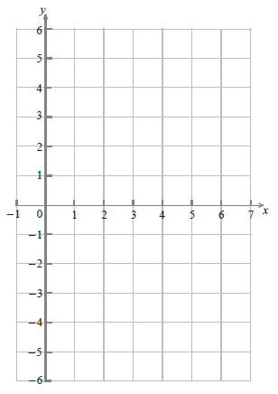
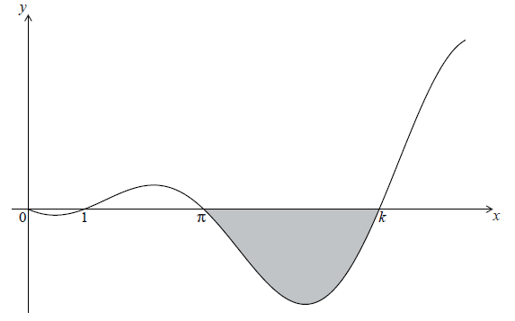

SL Paper 2
A particle P moves along a straight line. Its velocity \({v_{\text{P}}}{\text{ m}}\,{{\text{s}}^{ - 1}}\) after \(t\) seconds is given by \({v_{\text{P}}} = \sqrt t \sin \left( {\frac{\pi }{2}t} \right)\), for \(0 \leqslant t \leqslant 8\). The following diagram shows the graph of \({v_{\text{P}}}\).

Write down the first value of \(t\) at which P changes direction.
Find the total distance travelled by P, for \(0 \leqslant t \leqslant 8\).
A second particle Q also moves along a straight line. Its velocity, \({v_{\text{Q}}}{\text{ m}}\,{{\text{s}}^{ - 1}}\) after \(t\) seconds is given by \({v_{\text{Q}}} = \sqrt t \) for \(0 \leqslant t \leqslant 8\). After \(k\) seconds Q has travelled the same total distance as P.
Find \(k\).
Markscheme
\(t = 2\) A1 N1
[1 mark]
substitution of limits or function into formula or correct sum (A1)
eg\(\,\,\,\,\,\)\(\int_0^8 {\left| v \right|{\text{d}}t,{\text{ }}\int {\left| {{v_Q}} \right|{\text{d}}t,{\text{ }}\int_0^2 {v{\text{d}}t - \int_2^4 {v{\text{d}}t + \int_4^6 {v{\text{d}}t - \int_6^8 {v{\text{d}}t} } } } } } \)
9.64782
distance \( = 9.65{\text{ (metres)}}\) A1 N2
[2 marks]
correct approach (A1)
eg\(\,\,\,\,\,\)\(s = \int {\sqrt t ,{\text{ }}\int_0^k {\sqrt t } } {\text{d}}t,{\text{ }}\int_0^k {\left| {{v_{\text{Q}}}} \right|{\text{d}}t} \)
correct integration (A1)
eg\(\,\,\,\,\,\)\(\int {\sqrt t = \frac{2}{3}{t^{\frac{3}{2}}} + c,{\text{ }}\left[ {\frac{2}{3}{x^{\frac{3}{2}}}} \right]_0^k,{\text{ }}\frac{2}{3}{k^{\frac{3}{2}}}} \)
equating their expression to the distance travelled by their P (M1)
eg\(\,\,\,\,\,\)\(\frac{2}{3}{k^{\frac{3}{2}}} = 9.65,{\text{ }}\int_0^k {\sqrt t {\text{d}}t = 9.65} \)
5.93855
5.94 (seconds) A1 N3
[4 marks]
Examiners report
Let \(f(x) = \frac{{20x}}{{{{\rm{e}}^{0.3x}}}}\) , for \(0 \le x \le 20\) .
Sketch the graph of f .
(i) Write down the x-coordinate of the maximum point on the graph of f .
(ii) Write down the interval where f is increasing.
Show that \(f'(x) = \frac{{20 - 6x}}{{{{\rm{e}}^{0.3x}}}}\) .
Find the interval where the rate of change of f is increasing.
Markscheme
 A1A1A1 N3
A1A1A1 N3
Note: Award A1 for approximately correct shape with inflexion/change of curvature, A1 for maximum skewed to the left, A1 for asymptotic behaviour to the right.
[3 marks]
(i) \(x = 3.33\) A1 N1
(ii) correct interval, with right end point \(3\frac{1}{3}\) A1A1 N2
e.g. \(0 < x \le 3.33\) , \(0 \le x < 3\frac{1}{3}\)
Note: Accept any inequalities in the right direction.
[3 marks]
valid approach (M1)
e.g. quotient rule, product rule
2 correct derivatives (must be seen in product or quotient rule) (A1)(A1)
e.g. \(20\) , \(0.3{{\rm{e}}^{0.3x}}\) or \( - 0.3{{\rm{e}}^{ - 0.3x}}\)
correct substitution into product or quotient rule A1
e.g. \(\frac{{20{{\rm{e}}^{0.3x}} - 20x(0.3){{\rm{e}}^{0.3x}}}}{{{{({{\rm{e}}^{0.3x}})}^2}}}\) , \(20{{\rm{e}}^{ - 0.3x}} + 20x( - 0.3){{\rm{e}}^{ - 0.3x}}\)
correct working A1
e.g. \(\frac{{20{{\rm{e}}^{0.3x}} - 6x{{\rm{e}}^{0.3x}}}}{{{{\rm{e}}^{0.6x}}}}\) , \(\frac{{{{\rm{e}}^{0.3x}}(20 - 20x(0.3))}}{{{{{\rm{(}}{{\rm{e}}^{0.3x}})}^2}}}\) , \({{\rm{e}}^{ - 0.3x}}(20 + 20x( - 0.3))\)
\(f'(x) = \frac{{20 - 6x}}{{{{\rm{e}}^{0.3x}}}}\) AG N0
[5 marks]
consideration of \(f'\) or \(f''\) (M1)
valid reasoning R1
e.g. sketch of \(f'\) , \(f''\) is positive, \(f'' = 0\) , reference to minimum of \(f'\)
correct value \(6.6666666 \ldots \) \(\left( {6\frac{2}{3}} \right)\) (A1)
correct interval, with both endpoints A1 N3
e.g. \(6.67 < x \le 20\) , \(6\frac{2}{3} \le x < 20\)
[4 marks]
Examiners report
Many candidates earned the first four marks of the question in parts (a) and (b) for correctly using their GDC to graph and find the maximum value.
Many candidates earned the first four marks of the question in parts (a) and (b) for correctly using their GDC to graph and find the maximum value.
Most had a valid approach in part (c) using either the quotient or product rule, but many had difficulty applying the chain rule with a function involving e and simplifying.
Part (d) was difficult for most candidates. Although many associated rate of change with derivative, only the best-prepared students had valid reasoning and could find the correct interval with both endpoints.
Let \(f(x) = {{\rm{e}}^{2x}}\cos x\) , \( - 1 \le x \le 2\) .
Show that \(f'(x) = {{\rm{e}}^{2x}}(2\cos x - \sin x)\) .
Let the line L be the normal to the curve of f at \(x = 0\) .
Find the equation of L .
The graph of f and the line L intersect at the point (0, 1) and at a second point P.
(i) Find the x-coordinate of P.
(ii) Find the area of the region enclosed by the graph of f and the line L .
Markscheme
correctly finding the derivative of \({{\rm{e}}^{2x}}\) , i.e. \(2{{\rm{e}}^{2x}}\) A1
correctly finding the derivative of \(\cos x\) , i.e. \( - \sin x\) A1
evidence of using the product rule, seen anywhere M1
e.g. \(f'(x) = 2{{\rm{e}}^{2x}}\cos x - {{\rm{e}}^{2x}}\sin x\)
\(f'(x) = 2{{\rm{e}}^{2x}}(2\cos x - \sin x)\) AG N0
[3 marks]
evidence of finding \(f(0) = 1\) , seen anywhere A1
attempt to find the gradient of f (M1)
e.g. substituting \(x = 0\) into \(f'(x)\)
value of the gradient of f A1
e.g. \(f'(0) = 2\) , equation of tangent is \(y = 2x + 1\)
gradient of normal \( = - \frac{1}{2}\) (A1)
\(y - 1 = - \frac{1}{2}x\left( {y = - \frac{1}{2}x + 1} \right)\) A1 N3
[5 marks]
(i) evidence of equating correct functions M1
e.g. \({{\rm{e}}^{2x}}\cos x = - \frac{1}{2}x + 1\) , sketch showing intersection of graphs
\(x = 1.56\) A1 N1
(ii) evidence of approach involving subtraction of integrals/areas (M1)
e.g. \(\int {\left[ {f(x) - g(x)} \right]} {\rm{d}}x\) , \(\int {f(x)} {\rm{d}}x - {\text{area under trapezium}}\)
fully correct integral expression A2
e.g. \(\int_0^{1.56} {\left[ {{{\rm{e}}^{2x}}\cos x - \left( { - \frac{1}{2}x + 1} \right)} \right]} {\rm{d}}x\) , \(\int_0^{1.56} {{{\rm{e}}^{2x}}\cos x} {\rm{d}}x - 0.951 \ldots \)
\({\rm{area}} = 3.28\) A1 N2
[6 marks]
Examiners report
A good number of candidates demonstrated the ability to apply the product and chain rules to obtain the given derivative.
Where candidates recognized that the gradient of the tangent is the derivative, many went on to correctly find the equation of the normal.
Few candidates showed the setup of the equation in part (c) before writing their answer from the GDC. Although a good number of candidates correctly expressed the integral to find the area between the curves, surprisingly few found a correct answer. Although this is a GDC paper, some candidates attempted to integrate this function analytically.
A particle P moves along a straight line so that its velocity, \(v\,{\text{m}}{{\text{s}}^{ - 1}}\), after \(t\) seconds, is given by \(v = \cos 3t - 2\sin t - 0.5\), for \(0 \leqslant t \leqslant 5\). The initial displacement of P from a fixed point O is 4 metres.
The following sketch shows the graph of \(v\).

Find the displacement of P from O after 5 seconds.
Find when P is first at rest.
Write down the number of times P changes direction.
Find the acceleration of P after 3 seconds.
Find the maximum speed of P.
Markscheme
METHOD 1
recognizing \(s = \int v \) (M1)
recognizing displacement of P in first 5 seconds (seen anywhere) A1
(accept missing \({\text{d}}t\))
eg\(\,\,\,\,\,\)\(\int_0^5 {v{\text{d}}t,{\text{ }} - 3.71591} \)
valid approach to find total displacement (M1)
eg\(\,\,\,\,\,\)\(4 + ( - 3.7159),{\text{ }}s = 4 + \int_0^5 v \)
0.284086
0.284 (m) A2 N3
METHOD 2
recognizing \(s = \int v \) (M1)
correct integration A1
eg\(\,\,\,\,\,\)\(\frac{1}{3}\sin 3t + 2\cos t - \frac{t}{2} + c\) (do not penalize missing “\(c\)”)
attempt to find \(c\) (M1)
eg\(\,\,\,\,\,\)\(4 = \frac{1}{3}\sin (0) + 2\cos (0)--\frac{0}{2} + c,{\text{ }}4 = \frac{1}{3}\sin 3t + 2\cos t - \frac{t}{2} + c,{\text{ }}2 + c = 4\)
attempt to substitute \(t = 5\) into their expression with \(c\) (M1)
eg\(\,\,\,\,\,\)\(s(5),{\text{ }}\frac{1}{3}\sin (15) + 2\cos (5)5--\frac{5}{2} + 2\)
0.284086
0.284 (m) A1 N3
[5 marks]
recognizing that at rest, \(v = 0\) (M1)
\(t = 0.179900\)
\(t = 0.180{\text{ (secs)}}\) A1 N2
[2 marks]
recognizing when change of direction occurs (M1)
eg\(\,\,\,\,\,\)\(v\) crosses \(t\) axis
2 (times) A1 N2
[2 marks]
acceleration is \({v'}\) (seen anywhere) (M1)
eg\(\,\,\,\,\,\)\(v'(3)\)
0.743631
\(0.744{\text{ }}({\text{m}}{{\text{s}}^{ - 2}})\) A1 N2
[2 marks]
valid approach involving max or min of \(v\) (M1)
eg\(\,\,\,\,\,\)\(v\prime = 0,{\text{ }}a = 0\), graph
one correct co-ordinate for min (A1)
eg\(\,\,\,\,\,\)\(1.14102,{\text{ }}-3.27876\)
\(3.28{\text{ }}({\text{m}}{{\text{s}}^{ - 1}})\) A1 N2
[3 marks]
Examiners report
This question was not well done throughout. Analytical approaches were almost always unsuccessful as a result of poor integration and differentiation skills and many of the errors were a result of having the GDC in degree mode. In (a), most candidates recognized the need to integrate \(v\) to find the displacement, although a significant number differentiated \(v\). Of those that integrated, many assumed incorrectly that the initial displacement was the value of the constant of integration. Some candidates integrated \(\left| v \right|\) and obtained no marks for an invalid approach. In the case where a correct definite integral was given, it was disappointing to see many candidates try to evaluate it analytically rather than using their GDC.
This question was not well done throughout. Analytical approaches were almost always unsuccessful as a result of poor integration and differentiation skills and many of the errors were a result of having the GDC in degree mode. In part (b), many candidates did not read the question carefully and gave the two occasions, in the given domain, where the particle was at rest.
This question was not well done throughout. Analytical approaches were almost always unsuccessful as a result of poor integration and differentiation skills and many of the errors were a result of having the GDC in degree mode. In part (c), many candidates did not appreciate that velocity is a vector and that the particle would change direction when its velocity changes sign. Consequently, many candidates gave the incorrect answer of four changes in directions, rather than the correct two direction changes.
This question was not well done throughout. Analytical approaches were almost always unsuccessful as a result of poor integration and differentiation skills and many of the errors were a result of having the GDC in degree mode. Part (d), was done very poorly, with candidates struggling to differentiate sine and cosine correctly and to evaluate their derivative. As with question 3, many candidates worked with the incorrect angle setting on their calculator.
This question was not well done throughout. Analytical approaches were almost always unsuccessful as a result of poor integration and differentiation skills and many of the errors were a result of having the GDC in degree mode. Few candidates attempted part (e). Of those that did, many attempted to find the largest local maximum of the graph rather than least local minimum as they did not recognise speed as \(\left| v \right|\).
Let \(f(x) = \sqrt[3]{{{x^4}}} - \frac{1}{2}\).
Find \(f'(x)\).
Find \(\int {f(x){\text{d}}x} \).
Markscheme
expressing \(f\) as \({x^{\frac{4}{3}}}\) (M1)
\(f'(x) = \frac{4}{3}{x^{\frac{1}{3}}}{\text{ }}\left( { = \frac{4}{3}\sqrt[3]{x}} \right)\) A1 N2
[2 marks]
attempt to integrate \({\sqrt[3]{{{x^4}}}}\) (M1)
eg \(\frac{{{x^{\frac{4}{3} + 1}}}}{{\frac{4}{3} + 1}}\)
\(\int {f(x){\text{d}}x = \frac{3}{7}{x^{\frac{7}{3}}} - \frac{x}{2} + c} \) A1A1A1 N4
[4 marks]
Examiners report
The following diagram shows the graphs of \(f(x) = \ln (3x - 2) + 1\) and \(g(x) = - 4\cos (0.5x) + 2\) , for \(1 \le x \le 10\) .

Let A be the area of the region enclosed by the curves of f and g.
(i) Find an expression for A.
(ii) Calculate the value of A.
(i) Find \(f'(x)\) .
(ii) Find \(g'(x)\) .
There are two values of x for which the gradient of f is equal to the gradient of g. Find both these values of x.
Markscheme
(i) intersection points \(x = 3.77\) , \(x = 8.30\) (may be seen as the limits) (A1)(A1)
approach involving subtraction and integrals (M1)
fully correct expression A2
e.g. \(\int_{3.77}^{8.30} {(( - 4\cos (0.5x) + 2) - (\ln (3x - 2) + 1)){\rm{d}}x} \) , \(\int_{3.77}^{8.30} {g(x){\rm{d}}x - } \int_{3.77}^{8.30} {f(x){\rm{d}}x} \)
(ii) \(A = 6.46\) A1 N1
[6 marks]
(i) \(f'(x) = \frac{3}{{3x - 2}}\) A1A1 N2
Note: Award A1 for numerator (3), A1 for denominator (\({3x - 2}\)) , but penalize 1 mark for additional terms.
(ii) \(g'(x) = 2\sin (0.5x)\) A1A1 N2
Note: Award A1 for 2, A1 for \(\sin (0.5x)\) , but penalize 1 mark for additional terms.
[4 marks]
evidence of using derivatives for gradients (M1)
correct approach (A1)
e.g. \(f'(x) = g'(x)\) , points of intersection
\(x = 1.43\) , \(x = 6.10\) A1A1 N2N2
[4 marks]
Examiners report
Many candidates did not make good use of the GDC in this problem. Most had the correct expression but incorrect limits. Some tried to integrate to find the area without using their GDC. This became extremely complicated and time consuming.
In part (b), the chain rule was not used by some.
Most candidates realized the relationship between the gradient and the first derivative and set the two derivatives equal to one another. Once again many did not realize that the intersection could be easily found on their GDC.
Consider the function \(f(x) = {x^2} - 4x + 1\) .
Sketch the graph of f , for \( - 1 \le x \le 5\) .
This function can also be written as \(f(x) = {(x - p)^2} - 3\) .
Write down the value of p .
The graph of g is obtained by reflecting the graph of f in the x-axis, followed by a translation of \(\left( {\begin{array}{*{20}{c}}
0\\
6
\end{array}} \right)\) .
Show that \(g(x) = - {x^2} + 4x + 5\) .
The graph of g is obtained by reflecting the graph of f in the x-axis, followed by a translation of \(\left( {\begin{array}{*{20}{c}}
0\\
6
\end{array}} \right)\) .
The graphs of f and g intersect at two points.
Write down the x-coordinates of these two points.
The graph of \(g\) is obtained by reflecting the graph of \(f\) in the x-axis, followed by a translation of \(\left( {\begin{array}{*{20}{c}}
0 \\
6
\end{array}} \right)\) .
Let R be the region enclosed by the graphs of f and g .
Find the area of R .
Markscheme
 A1A1A1A1 N4
A1A1A1A1 N4
Note: The shape must be an approximately correct upwards parabola.
Only if the shape is approximately correct, award the following:
A1 for vertex \(x \approx 2\) , A1 for x-intercepts between 0 and 1, and 3 and 4, A1 for correct y-intercept \((0{\text{, }}1)\), A1 for correct domain \([ - 1{\text{, }}5]\).
Scale not required on the axes, but approximate positions need to be clear.
[4 marks]
\(p = 2\) A1 N1
[1 mark]
correct vertical reflection, correct vertical translation (A1)(A1)
e.g. \( - f(x)\) , \( - ({(x - 2)^2} - 3)\) , \( - y\) , \( - f(x) + 6\) , \(y + 6\)
transformations in correct order (A1)
e.g. \( - ({x^2} - 4x + 1) + 6\) , \( - ({(x - 2)^2} - 3) + 6\)
simplification which clearly leads to given answer A1
e.g. \( - {x^2} + 4x - 1 + 6\) , \( - ({x^2} - 4x + 4 - 3) + 6\)
\(g(x) = - {x^2} + 4x + 5\) AG N0
Note: If working shown, award A1A1A0A0 if transformations correct, but done in reverse order, e.g. \( - ({x^2} - 4x + 1 + 6)\).
[4 marks]
valid approach (M1)
e.g. sketch, \(f = g\)
\( - 0.449489 \ldots \) , \(4.449489 \ldots \)
\((2 \pm \sqrt 6 )\) (exact), \( - 0.449{\text{ }}[ - 0.450{\text{, }} - 0.449]\) ; \(4.45{\text{ }}[4.44{\text{, }}4.45]\) A1A1 N3
[3 marks]
attempt to substitute limits or functions into area formula (accept absence of \({\rm{d}}x\) ) (M1)
e.g. \(\int_a^b {(( - {x^2}} + 4x + 5) - ({x^2} - 4x + 1)){\rm{d}}x\) , \(\int_{4.45}^{ - 0.449} {(f - g)} \) , \(\int {( - 2{x^2}} + 8x + 4){\rm{d}}x\)
approach involving subtraction of integrals/areas (accept absence of \({\rm{d}}x\) ) (M1)
e.g. \(\int_a^b {( - {x^2}} + 4x + 5) - \int_a^b {({x^2}} - 4x + 1)\) , \(\int {(f - g){\rm{d}}x} \)
\({\rm{area}} = 39.19183 \ldots \)
\({\rm{area}} = 39.2\) \([39.1{\text{, }}39.2]\) A1 N3
[3 marks]
Examiners report
A good number of students provided a clear sketch of the quadratic function within the given domain. Some lost marks as they did not clearly indicate the approximate positions of the most important points of the parabola either by labelling or providing a suitable scale.
There were few difficulties in part (b).
In part (c), candidates often used an insufficient number of steps to show the required result or had difficulty setting out their work logically.
Part (d) was generally done well though many candidates gave at least one answer to fewer than three significant figures, potentially resulting in more lost marks.
In part (e), many candidates were unable to connect the points of intersection found in part (d) with the limits of integration. Mistakes were also made here either using a GDC incorrectly or not subtracting the correct functions. Other candidates tried to divide the region into four areas and made obvious errors in the process. Very few candidates subtracted \(f(x)\) from \(g(x)\) to get a simple function before integrating and there were numerous, fruitless analytical attempts to find the required integral.
Let \(f(x) = \cos 2x\) and \(g(x) = \ln (3x - 5)\) .
Find \(f'(x)\) .
Find \(g'(x)\) .
Let \(h(x) = f(x) \times g(x)\) . Find \(h'(x)\) .
Markscheme
(a) \(f'(x) = - \sin 2x \times 2( = - 2\sin 2x)\) A1A1 N2
Note: Award A1 for 2, A1 for \( - \sin 2x\) .
[2 marks]
\(g'(x) = 3 \times \frac{1}{{3x - 5}}\) \(\left( { = \frac{3}{{3x - 5}}} \right)\) A1A1 N2
Note: Award A1 for 3, A1 for \(\frac{1}{{3x - 5}}\) .
[2 marks]
evidence of using product rule (M1)
\(h'(x) = (\cos 2x)\left( {\frac{3}{{3x - 5}}} \right) + \ln (3x - 5)( - 2\sin 2x)\) A1 N2
[2 marks]
Examiners report
Almost all candidates earned at least some of the marks on this question. Some weaker students showed partial knowledge of the chain rule, forgetting to account for the coefficient of \(x\) in their derivatives. A few did not know how to use the product rule, even though it is in the information booklet.
Almost all candidates earned at least some of the marks on this question. Some weaker students showed partial knowledge of the chain rule, forgetting to account for the coefficient of \(x\) in their derivatives. A few did not know how to use the product rule, even though it is in the information booklet.
Almost all candidates earned at least some of the marks on this question. Some weaker students showed partial knowledge of the chain rule, forgetting to account for the coefficient of x in their derivatives. A few did not know how to use the product rule, even though it is in the information booklet.
Let \(f(x) = x{(x - 5)^2}\) , for \(0 \le x \le 6\) . The following diagram shows the graph of f .

Let R be the region enclosed by the x-axis and the curve of f .
Find the area of R.
Find the volume of the solid formed when R is rotated through \({360^ \circ }\) about the x-axis.
The diagram below shows a part of the graph of a quadratic function \(g(x) = x(a - x)\) . The graph of g crosses the x-axis when \(x = a\) .

The area of the shaded region is equal to the area of R. Find the value of a.
Markscheme
finding the limits \(x = 0\) , \(x = 5\) (A1)
integral expression A1
e.g. \(\int_0^5 {f(x){\rm{d}}x} \)
area = 52.1 A1 N2
[3 marks]
evidence of using formula \(v = \int {\pi {y^2}{\rm{d}}x} \) (M1)
correct expression A1
e.g. volume \( = \pi \int_0^5 {{x^2}{{(x - 5)}^4}{\rm{d}}x} \)
volume = 2340 A2 N2
[4 marks]
area is \(\int_0^a {x(a - x){\rm{d}}x} \) A1
\( = \left[ {\frac{{a{x^2}}}{2} - \frac{{{x^3}}}{3}} \right]_0^a\) A1A1
substituting limits (M1)
e.g. \(\frac{{{a^3}}}{2} - \frac{{{a^3}}}{3}\)
setting expression equal to area of R (M1)
correct equation A1
e.g. \(\frac{{{a^3}}}{2} - \frac{{{a^3}}}{3} = 52.1\) , \({a^3} = 6 \times 52.1\)
\(a = 6.79\) A1 N3
[7 marks]
Examiners report
Many candidates set up a completely correct equation for the area enclosed by the x-axis and the curve. Also, many of them tried an analytic approach which sometimes returned incorrect answers. Using the wrong limits \(0\) and \(6\) was a common error.
The formula for the volume of revolution given in the data booklet was seen many times in part (b). Some candidates wrote the integrand incorrectly, either missing the \(\pi \) or not squaring. A good number of students could write a completely correct integral expression for the volume of revolution but fewer could evaluate it correctly as many started an analytical approach instead of using their GDC.
Many candidates did not use a GDC at all in this question. Pages of calculations were produced in an effort to find the area and the volume of revolution. This probably caused a shortage of time for later questions.
Many candidates did not use a GDC at all in this question. Pages of calculations were produced in an effort to find the area and the volume of revolution. This probably caused a shortage of time for later questions.
The velocity v ms−1 of an object after t seconds is given by \(v(t) = 15\sqrt t - 3t\) , for \(0 \le t \le 25\) .
On the grid below, sketch the graph of v , clearly indicating the maximum point.
![]()
(i) Write down an expression for d .
(ii) Hence, write down the value of d .
Markscheme
 A1A1A1 N3
A1A1A1 N3
Note: Award A1 for approximately correct shape, A1 for right endpoint at \((25{\text{, }}0)\) and A1 for maximum point in circle.
[3 marks]
(i) recognizing that d is the area under the curve (M1)
e.g. \(\int {v(t)} \)
correct expression in terms of t, with correct limits A2 N3
e.g. \(d = \int_0^9 {(15\sqrt t } - 3t){\rm{d}}t\) , \(d = \int_0^9 v {\rm{d}}t\)
(ii) \(d = 148.5\) (m) (accept 149 to 3 sf) A1 N1
[4 marks]
Examiners report
The graph in part (a) was well done. It was pleasing to see many candidates considering the domain as they sketched their graph.
Part (b) (i) asked for an expression which bewildered a great many candidates. However, few had difficulty obtaining the correct answer in (b) (ii).
A gradient function is given by \(\frac{{{\rm{d}}y}}{{{\rm{d}}x}} = 10{{\rm{e}}^{2x}} - 5\) . When \(x = 0\) , \(y = 8\) . Find the value of y when \(x = 1\) .
Markscheme
METHOD 1
evidence of anti-differentiation (M1)
e.g. \(\int {(10{{\rm{e}}^{2x}} - 5){\rm{d}}x} \)
\(y = 5{{\rm{e}}^{2x}} - 5x + C\) A2A1
Note: Award A2 for \(5{{\rm{e}}^{2x}}\) , A1 for \( - 5x\) . If “C” is omitted, award no further marks.
substituting \((0{\text{, }}8)\) (M1)
e.g. \(8 = 5 + C\)
\(C = 3\) \((y = 5{{\rm{e}}^{2x}} - 5x + 3)\) (A1)
substituting \(x = 1\) (M1)
\(y = 34.9\) \((5{{\rm{e}}^2} - 2)\) A1 N4
METHOD 2
evidence of definite integral function expression (M2)
e.g. \(\int_a^x {f'(t){\rm{d}}t = } f(x) - f(a)\) , \(\int_0^x {(10{{\rm{e}}^{2x}} - 5)} \)
initial condition in definite integral function expression (A2)
e.g. \(\int_0^x {(10{{\rm{e}}^{2t}} - 5)} {\rm{d}}t = y - 8\) , \(\int_0^x {(10{{\rm{e}}^{2x}} - 5)} {\rm{d}}x + 8\)
correct definite integral expression for y when \(x = 1\) (A2)
e.g. \(\int_0^1 {(10{{\rm{e}}^{2x}} - 5){\rm{d}}x + 8} \)
\(y = 34.9\) \((5{{\rm{e}}^2} - 2)\) A1 N4
[8 marks]
Examiners report
Although a pleasing number of candidates recognized the requirement of integration, many did not correctly apply the reverse of the chain rule to integration. While some candidates did not write the constant of integration, many did, earning additional follow-through marks even with an incorrect integral. Weaker candidates sometimes substituted \(x = 1\) into \(\frac{{{\rm{d}}y}}{{{\rm{d}}x}}\) or attempted some work with a tangent line equation, earning no marks.
A particle moves in a straight line. Its velocity, \(v{\text{ m}}{{\text{s}}^{ - 1}}\), at time \(t\) seconds, is given by
\[v = {\left( {{t^2} - 4} \right)^3},{\text{ for }}0 \leqslant t \leqslant 3.\]
Find the velocity of the particle when \(t = 1\).
Find the value of \(t\) for which the particle is at rest.
Find the total distance the particle travels during the first three seconds.
Show that the acceleration of the particle is given by \(a = 6t{({t^2} - 4)^2}\).
Find all possible values of \(t\) for which the velocity and acceleration are both positive or both negative.
Markscheme
substituting \(t = 1\) into \(v\) (M1)
eg \(v(1),{\text{ }}{\left( {{1^2} - 4} \right)^3}\)
velocity \( = - 27{\text{ }}\left( {{\text{m}}{{\text{s}}^{ - 1}}} \right)\) A1 N2
[2 marks]
valid reasoning (R1)
eg \(v = 0,{\text{ }}{\left( {{t^2} - 4} \right)^3} = 0\)
correct working (A1)
eg \({t^2} - 4 = 0,{\text{ }}t = \pm 2\), sketch
\(t = 2\) A1 N2
[3 marks]
correct integral expression for distance (A1)
eg \(\int_0^3 {\left| v \right|,{\text{ }}\int {\left| {{{\left( {{t^2} - 4} \right)}^3}} \right|,{\text{ }} - \int_0^2 {v{\text{d}}t + \int_2^3 {v{\text{d}}t} } } } \),
\(\int_0^2 {{{\left( {4 - {t^2}} \right)}^3}{\text{d}}t + \int_2^3 {{{\left( {{t^2} - 4} \right)}^3}{\text{d}}t} }\) (do not accept \(\int_0^3 {v{\text{d}}t} \))
\(86.2571\)
\({\text{distance}} = 86.3{\text{ (m)}}\) A2 N3
[3 marks]
evidence of differentiating velocity (M1)
eg \(v'(t)\)
\(a = 3{\left( {{t^2} - 4} \right)^2}(2t)\) A2
\(a = 6t{\left( {{t^2} - 4} \right)^2}\) AG N0
[3 marks]
METHOD 1
valid approach M1
eg graphs of \(v\) and \(a\)
correct working (A1)
eg areas of same sign indicated on graph
\(2 < t \leqslant 3\) (accept \(t > 2\)) A2 N2
METHOD 2
recognizing that \(a \geqslant 0\) (accept \(a\) is always positive) (seen anywhere) R1
recognizing that \(v\) is positive when \(t > 2\) (seen anywhere) (R1)
\(2 < t \leqslant 3\) (accept \(t > 2\)) A2 N2
[4 marks]
Examiners report
The following diagram shows the graph of \(f(x) = {{\rm{e}}^{ - {x^2}}}\) .

The points A, B, C, D and E lie on the graph of f . Two of these are points of inflexion.
Identify the two points of inflexion.
(i) Find \(f'(x)\) .
(ii) Show that \(f''(x) = (4{x^2} - 2){{\rm{e}}^{ - {x^2}}}\) .
Find the x-coordinate of each point of inflexion.
Use the second derivative to show that one of these points is a point of inflexion.
Markscheme
B, D A1A1 N2
[2 marks]
(i) \(f'(x) = - 2x{{\rm{e}}^{ - {x^2}}}\) A1A1 N2
Note: Award A1 for \({{\rm{e}}^{ - {x^2}}}\) and A1 for \( - 2x\) .
(ii) finding the derivative of \( - 2x\) , i.e. \( - 2\) (A1)
evidence of choosing the product rule (M1)
e.g. \( - 2{{\rm{e}}^{ - {x^2}}}\) \( - 2x \times - 2x{{\rm{e}}^{ - {x^2}}}\)
\( - 2{{\rm{e}}^{ - {x^2}}} + 4{x^2}{{\rm{e}}^{ - {x^2}}}\) A1
\(f''(x) = (4{x^2} - 2){{\rm{e}}^{ - {x^2}}}\) AG N0
[5 marks]
valid reasoning R1
e.g. \(f''(x) = 0\)
attempting to solve the equation (M1)
e.g. \((4{x^2} - 2) = 0\) , sketch of \(f''(x)\)
\(p = 0.707\) \(\left( { = \frac{1}{{\sqrt 2 }}} \right)\) , \(q = - 0.707\) \(\left( { = - \frac{1}{{\sqrt 2 }}} \right)\) A1A1 N3
[4 marks]
evidence of using second derivative to test values on either side of POI M1
e.g. finding values, reference to graph of \(f''\) , sign table
correct working A1A1
e.g. finding any two correct values either side of POI,
checking sign of \(f''\) on either side of POI
reference to sign change of \(f''(x)\) R1 N0
[4 marks]
Examiners report
Most candidates were able to recognize the points of inflexion in part (a).
Most candidates were able to recognize the points of inflexion in part (a) and had little difficulty with the first and second derivatives in part (b). A few did not recognize the application of the product rule in part (b).
Obtaining the x-coordinates of the inflexion points in (c) usually did not cause many problems.
Only the better-prepared candidates understood how to set up a second derivative test in part (d). Many of those did not show, or clearly indicate, the values of x used to test for a point of inflexion, but merely gave an indication of the sign. Some candidates simply resorted to showing that \(f''\left( { \pm \frac{1}{{\sqrt 2 }}} \right) = 0\) , completely missing the point of the question. The necessary condition for a point of inflexion, i.e. \(f''(x) = 0\) and the change of sign for \(f''(x)\) , seemed not to be known by the vast majority of candidates.
Let \(f(x) = - 0.5{x^4} + 3{x^2} + 2x\). The following diagram shows part of the graph of \(f\).

There are \(x\)-intercepts at \(x = 0\) and at \(x = p\). There is a maximum at A where \(x = a\), and a point of inflexion at B where \(x = b\).
Find the value of \(p\).
Write down the coordinates of A.
Write down the rate of change of \(f\) at A.
Find the coordinates of B.
Find the the rate of change of \(f\) at B.
Let \(R\) be the region enclosed by the graph of \(f\) , the \(x\)-axis, the line \(x = b\) and the line \(x = a\). The region \(R\) is rotated 360° about the \(x\)-axis. Find the volume of the solid formed.
Markscheme
evidence of valid approach (M1)
eg\(\,\,\,\,\,\)\(f(x) = 0,{\text{ }}y = 0\)
2.73205
\(p = 2.73\) A1 N2
[2 marks]
1.87938, 8.11721
\((1.88,{\text{ }}8.12)\) A2 N2
[2 marks]
rate of change is 0 (do not accept decimals) A1 N1
[1 marks]
METHOD 1 (using GDC)
valid approach M1
eg\(\,\,\,\,\,\)\(f’’ = 0\), max/min on \(f’,{\text{ }}x = - 1\)
sketch of either \(f’\) or \(f’’\), with max/min or root (respectively) (A1)
\(x = 1\) A1 N1
Substituting their \(x\) value into \(f\) (M1)
eg\(\,\,\,\,\,\)\(f(1)\)
\(y = 4.5\) A1 N1
METHOD 2 (analytical)
\(f’’ = - 6{x^2} + 6\) A1
setting \(f’’ = 0\) (M1)
\(x = 1\) A1 N1
substituting their \(x\) value into \(f\) (M1)
eg\(\,\,\,\,\,\)\(f(1)\)
\(y = 4.5\) A1 N1
[4 marks]
recognizing rate of change is \(f’\) (M1)
eg\(\,\,\,\,\,\)\(y’,{\text{ }}f’(1)\)
rate of change is 6 A1 N2
[3 marks]
attempt to substitute either limits or the function into formula (M1)
involving \({f^2}\) (accept absence of \(\pi \) and/or \({\text{d}}x\))
eg\(\,\,\,\,\,\)\(\pi \int {{{( - 0.5{x^4} + 3{x^2} + 2x)}^2}{\text{d}}x,{\text{ }}\int_1^{1.88} {{f^2}} } \)
128.890
\({\text{volume}} = 129\) A2 N3
[3 marks]
Examiners report
Note: In this question, distance is in metres and time is in seconds.
A particle moves along a horizontal line starting at a fixed point A. The velocity \(v\) of the particle, at time \(t\), is given by \(v(t) = \frac{{2{t^2} - 4t}}{{{t^2} - 2t + 2}}\), for \(0 \leqslant t \leqslant 5\). The following diagram shows the graph of \(v\)

There are \(t\)-intercepts at \((0,{\text{ }}0)\) and \((2,{\text{ }}0)\).
Find the maximum distance of the particle from A during the time \(0 \leqslant t \leqslant 5\) and justify your answer.
Markscheme
METHOD 1 (displacement)
recognizing \(s = \int {v{\text{d}}t} \) (M1)
consideration of displacement at \(t = 2\) and \(t = 5\) (seen anywhere) M1
eg\(\,\,\,\,\,\)\(\int_0^2 v \) and \(\int_0^5 v \)
Note: Must have both for any further marks.
correct displacement at \(t = 2\) and \(t = 5\) (seen anywhere) A1A1
\( - 2.28318\) (accept 2.28318), 1.55513
valid reasoning comparing correct displacements R1
eg\(\,\,\,\,\,\)\(\left| { - 2.28} \right| > \left| {1.56} \right|\), more left than right
2.28 (m) A1 N1
Note: Do not award the final A1 without the R1.
METHOD 2 (distance travelled)
recognizing distance \( = \int {\left| v \right|{\text{d}}t} \) (M1)
consideration of distance travelled from \(t = 0\) to 2 and \(t = 2\) to 5 (seen anywhere) M1
eg\(\,\,\,\,\,\)\(\int_0^2 v \) and \(\int_2^5 v \)
Note: Must have both for any further marks
correct distances travelled (seen anywhere) A1A1
2.28318, (accept \( - 2.28318\)), 3.83832
valid reasoning comparing correct distance values R1
eg\(\,\,\,\,\,\)\(3.84 - 2.28 < 2.28,{\text{ }}3.84 < 2 \times 2.28\)
2.28 (m) A1 N1
Note: Do not award the final A1 without the R1.
[6 marks]
Examiners report
Let \(f(x) = x\cos x\) , for \(0 \le x \le 6\) .
Find \(f'(x)\) .
On the grid below, sketch the graph of \(y = f'(x)\) .

Markscheme
evidence of choosing the product rule (M1)
e.g. \(x \times ( - \sin x) + 1 \times \cos x\)
\(f'(x) = \cos x - x\sin x\) A1A1 N3
[3 marks]
 A1A1A1A1 N4
A1A1A1A1 N4
Note: Award A1 for correct domain, \(0 \le x \le 6\) with endpoints in circles, A1 for approximately correct shape, A1 for local minimum in circle, A1 for local maximum in circle.
[4 marks]
Examiners report
This problem was well done by most candidates. There were some candidates that struggled to apply the product rule in part (a) and often wrote nonsense like \( - x\sin x = - \sin {x^2}\) .
In part (b), few candidates were able to sketch the function within the required domain and a large number of candidates did not have their calculator in the correct mode.
The acceleration, \(a{\text{ m}}{{\text{s}}^{ - 2}}\), of a particle at time t seconds is given by \[a = \frac{1}{t} + 3\sin 2t {\text{, for }} t \ge 1.\]
The particle is at rest when \(t = 1\) .
Find the velocity of the particle when \(t = 5\) .
Markscheme
evidence of integrating the acceleration function (M1)
e.g. \(\int {\left( {\frac{1}{t} + 3\sin 2t} \right)} {\rm{d}}t\)
correct expression \(\ln t - \frac{3}{2}\cos 2t + c\) A1A1
evidence of substituting (1, 0) (M1)
e.g. \(0 = \ln 1 - \frac{3}{2}\cos 2 + c\)
\(c = - 0.624\) \(\left( { = \frac{3}{2}\cos 2 - \ln {\text{1 or }}\frac{{\rm{3}}}{{\rm{2}}}\cos 2} \right)\) (A1)
\(v = \ln t - \frac{3}{2}\cos 2t - 0.624\) \(\left( { = \ln t - \frac{3}{2}\cos 2t + \frac{3}{2}\cos {\text{2 or ln}}t - \frac{3}{2}\cos 2t + \frac{3}{2}\cos 2 - \ln 1} \right)\) (A1)
\(v(5) = 2.24\) (accept the exact answer \(\ln 5 - 1.5\cos 10 + 1.5\cos 2\) ) A1 N3
[7 marks]
Examiners report
This problem was not well done. A large number of students failed to recognize that they needed to integrate the acceleration function. Even among those who integrated the function, there were many who integrated incorrectly. A great number of candidates were not able to handle the given initial condition to find the integration constant but incorrectly substituted \(t = 5\) directly into their expression.
A particle P starts from a point A and moves along a horizontal straight line. Its velocity \(v{\text{ cm}}\,{{\text{s}}^{ - 1}}\) after \(t\) seconds is given by
\[v(t) = \left\{ {\begin{array}{*{20}{l}} { - 2t + 2,}&{{\text{for }}0 \leqslant t \leqslant 1} \\ {3\sqrt t + \frac{4}{{{t^2}}} - 7,}&{{\text{for }}1 \leqslant t \leqslant 12} \end{array}} \right.\]
The following diagram shows the graph of \(v\).

P is at rest when \(t = 1\) and \(t = p\).
When \(t = q\), the acceleration of P is zero.
Find the initial velocity of \(P\).
Find the value of \(p\).
(i) Find the value of \(q\).
(ii) Hence, find the speed of P when \(t = q\).
(i) Find the total distance travelled by P between \(t = 1\) and \(t = p\).
(ii) Hence or otherwise, find the displacement of P from A when \(t = p\).
Markscheme
valid attempt to substitute \(t = 0\) into the correct function (M1)
eg\(\,\,\,\,\,\)\( - 2(0) + 2\)
2 A1 N2
[2 marks]
recognizing \(v = 0\) when P is at rest (M1)
5.21834
\(p = 5.22{\text{ }}({\text{seconds}})\) A1 N2
[2 marks]
(i) recognizing that \(a = v'\) (M1)
eg\(\,\,\,\,\,\)\(v' = 0\), minimum on graph
1.95343
\(q = 1.95\) A1 N2
(ii) valid approach to find their minimum (M1)
eg\(\,\,\,\,\,\)\(v(q),{\text{ }} - 1.75879\), reference to min on graph
1.75879
speed \( = 1.76{\text{ }}(c\,{\text{m}}\,{{\text{s}}^{ - 1}})\) A1 N2
[4 marks]
(i) substitution of correct \(v(t)\) into distance formula, (A1)
eg\(\,\,\,\,\,\)\(\int_1^p {\left| {3\sqrt t + \frac{4}{{{t^2}}} - 7} \right|{\text{d}}t,{\text{ }}\left| {\int {3\sqrt t + \frac{4}{{{t^2}}} - 7{\text{d}}t} } \right|} \)
4.45368
distance \( = 4.45{\text{ }}({\text{cm}})\) A1 N2
(ii) displacement from \(t = 1\) to \(t = p\) (seen anywhere) (A1)
eg\(\,\,\,\,\,\)\( - 4.45368,{\text{ }}\int_1^p {\left( {3\sqrt t + \frac{4}{{{t^2}}} - 7} \right){\text{d}}t} \)
displacement from \(t = 0\) to \(t = 1\) (A1)
eg\(\,\,\,\,\,\)\(\int_0^1 {( - 2t + 2){\text{d}}t,{\text{ }}0.5 \times 1 \times 2,{\text{ 1}}} \)
valid approach to find displacement for \(0 \leqslant t \leqslant p\) M1
eg\(\,\,\,\,\,\)\(\int_0^1 {( - 2t + 2){\text{d}}t + \int_1^p {\left( {3\sqrt t + \frac{4}{{{t^2}}} - 7} \right){\text{d}}t,{\text{ }}\int_0^1 {( - 2t + 2){\text{d}}t - 4.45} } } \)
\( - 3.45368\)
displacement \( = - 3.45{\text{ }}({\text{cm}})\) A1 N2
[6 marks]
Examiners report
Let \(f(x) = {{\rm{e}}^x}(1 - {x^2})\) .
Part of the graph of \(y = f(x)\), for \( - 6 \le x \le 2\) , is shown below. The x-coordinates of the local minimum and maximum points are r and s respectively.

Show that \(f'(x) = {{\rm{e}}^x}(1 - 2x - {x^2})\) .
Write down the equation of the horizontal asymptote.
Write down the value of r and of s.
Let L be the normal to the curve of f at \({\text{P}}(0{\text{, }}1)\) . Show that L has equation \(x + y = 1\) .
Let R be the region enclosed by the curve \(y = f(x)\) and the line L.
(i) Find an expression for the area of R.
(ii) Calculate the area of R.
Markscheme
evidence of using the product rule M1
\(f'(x) = {{\rm{e}}^x}(1 - {x^2}) + {{\rm{e}}^x}( - 2x)\) A1A1
Note: Award A1 for \({{\rm{e}}^x}(1 - {x^2})\) , A1 for \({{\rm{e}}^x}( - 2x)\) .
\(f'(x) = {{\rm{e}}^x}(1 - 2x - {x^2})\) AG N0
[3 marks]
\(y = 0\) A1 N1
[1 mark]
at the local maximum or minimum point
\(f'(x) = 0\) \(({{\rm{e}}^x}(1 - 2x - {x^2}) = 0)\) (M1)
\( \Rightarrow 1 - 2x - {x^2} = 0\) (M1)
\(r = - 2.41\) \(s = 0.414\) A1A1 N2N2
[4 marks]
\(f'(0) = 1\) A1
gradient of the normal \(= - 1\) A1
evidence of substituting into an equation for a straight line (M1)
correct substitution A1
e.g. \(y - 1 = - 1(x - 0)\) , \(y - 1 = - x\) , \(y = - x + 1\)
\(x + y = 1\) AG N0
[4 marks]
(i) intersection points at \(x = 0\) and \(x = 1\) (may be seen as the limits) (A1)
approach involving subtraction and integrals (M1)
fully correct expression A2 N4
e.g. \(\int_0^1 {\left( {{{\rm{e}}^x}(1 - {x^2}) - (1 - x)} \right)} {\rm{d}}x\) , \(\int_0^1 {f(x){\rm{d}}x - \int_0^1 {(1 - x){\rm{d}}x} } \)
(ii) area \(R = 0.5\) A1 N1
[5 marks]
Examiners report
Many candidates clearly applied the product rule to correctly show the given derivative. Some candidates missed the multiplicative nature of the function and attempted to apply a chain rule instead.
For part (b), the equation of the horizontal asymptote was commonly written as \(x = 0\) .
Although part (c) was a “write down” question where no working is required, a good number of candidates used an algebraic method of solving for r and s which sometimes returned incorrect answers. Those who used their GDC usually found correct values, although not always to three significant figures.
In part (d), many candidates showed some skill showing the equation of a normal, although some tried to work with the gradient of the tangent.
Surprisingly few candidates set up a completely correct expression for the area between curves that considered both integration and the correct subtraction of functions. Using limits of \( - 6\) and 2 was a common error, as was integrating on \(f(x)\) alone. Where candidates did write a correct expression, many attempted to perform analytic techniques to calculate the area instead of using their GDC.
A particle’s displacement, in metres, is given by \(s(t) = 2t\cos t\) , for \(0 \le t \le 6\) , where t is the time in seconds.
On the grid below, sketch the graph of \(s\) .

Find the maximum velocity of the particle.
Markscheme
 A1A1A1A1 N4
A1A1A1A1 N4
Note: Award A1 for approximately correct shape (do not accept line segments).
Only if this A1 is awarded, award the following:
A1 for maximum and minimum within circles,
A1 for x-intercepts between 1 and 2 and between 4 and 5,
A1 for left endpoint at \((0{\text{, }}0)\) and right endpoint within circle.
[4 marks]
appropriate approach (M1)
e.g. recognizing that \(v = s'\) , finding derivative, \(a = s''\)
valid method to find maximum (M1)
e.g. sketch of \(v\) , \(v'(t) = 0\) , \(t = 5.08698 \ldots \)
\(v = 10.20025 \ldots \)
\(v = 10.2\) \([10.2{\text{, }}10.3]\) A1 N2
[3 marks]
Examiners report
Most candidates sketched an approximately correct shape for the displacement of a particle in the given domain, but many lost marks for carelessness in graphing the local extrema or the right endpoint.
In part (b), most candidates knew to differentiate displacement to find velocity, but few knew how to then find the maximum. Occasionally, a candidate would give the time value of the maximum. Others attempted to incorrectly set the first derivative equal to zero and solve analytically rather than take the maximum value from the graph of the velocity function.
Let \(f(x) = a{x^3} + b{x^2} + c\) , where a , b and c are real numbers. The graph of f passes through the point (2, 9) .
Show that \(8a + 4b + c = 9\) .
The graph of f has a local minimum at \((1{\text{, }}4)\) .
Find two other equations in a , b and c , giving your answers in a similar form to part (a).
Find the value of a , of b and of c .
Markscheme
attempt to substitute coordinates in f (M1)
e.g. \(f(2) = 9\)
correct substitution A1
e.g. \(a \times {2^3} + b \times {2^2} + c = 9\)
\(8a + 4b + c = 9\) AG N0
[2 marks]
recognizing that \((1{\text{, }}4)\) is on the graph of f (M1)
e.g. \(f(1) = 4\)
correct equation A1
e.g. \(a + b + c = 4\)
recognizing that \(f' = 0\) at minimum (seen anywhere) (M1)
e.g. \(f'(1) = 0\)
\(f'(x) = 3a{x^2} + 2bx\) (seen anywhere) A1A1
correct substitution into derivative (A1)
e.g. \(3a \times {1^2} + 2b \times 1 = 0\)
correct simplified equation A1
e.g. \(3a + 2b = 0\)
[7 marks]
valid method for solving system of equations (M1)
e.g. inverse of a matrix, substitution
\(a = 2\) , \(b = - 3\) , \(c = 5\) A1A1A1 N4
[4 marks]
Examiners report
Part (a) was generally well done, with a few candidates failing to show a detailed substitution. Some substituted 2 in place of x, but didn't make it clear that they had substituted in y as well.
A great majority could find the two equations in part (b). However there were a significant number of candidates who failed to identify that the gradient of the tangent is zero at a minimum point, thus getting the incorrect equation \(3a + 2b = 4\) .
A considerable number of candidates only had 2 equations, so that they either had a hard time trying to come up with a third equation (incorrectly combining some of the information given in the question) to solve part (c) or they completely failed to solve it.
Despite obtaining three correct equations many used long elimination methods that caused algebraic errors. Pages of calculations leading nowhere were seen.
Those who used matrix methods were almost completely successful.
Let \(f'(x) = - 24{x^3} + 9{x^2} + 3x + 1\) .
There are two points of inflexion on the graph of f . Write down the x-coordinates of these points.
Let \(g(x) = f''(x)\) . Explain why the graph of g has no points of inflexion.
Markscheme
valid approach R1
e.g. \(f''(x) = 0\) , the max and min of \(f'\) gives the points of inflexion on f
\( - 0.114{\text{, }}0.364\) (accept (\( - 0.114{\text{, }}0.811\)) and (\(0.364{\text{, }}2.13)\)) A1A1 N1N1
[3 marks]
METHOD 1
graph of g is a quadratic function R1 N1
a quadratic function does not have any points of inflexion R1 N1
METHOD 2
graph of g is concave down over entire domain R1 N1
therefore no change in concavity R1 N1
METHOD 3
\(g''(x) = - 144\) R1 N1
therefore no points of inflexion as \(g''(x) \ne 0\) R1 N1
[2 marks]
Examiners report
There were mixed results in part (a). Students were required to understand the relationships between a function and its derivative and often obtained the correct solutions with incorrect or missing reasoning.
In part (b), the question was worth two marks and candidates were required to make two valid points in their explanation. There were many approaches to take here and candidates often confused their reasoning or just kept writing hoping that somewhere along the way they would say something correct to pick up the points. Many confused \(f'\) and \(g'\) .
Let \(f(x) = {x^2}\) and \(g(x) = 3\ln (x + 1)\), for \(x > - 1\).
Solve \(f(x) = g(x)\).
Find the area of the region enclosed by the graphs of \(f\) and \(g\).
Markscheme
valid approach (M1)
eg sketch
0, 1.73843
\(x = 0,{\text{ }}x = 1.74{\text{ }}\left( {{\text{accept }}(0,{\text{ }}0){\text{ and }}(1.74,{\text{ }}3.02)} \right)\) A1A1 N3
[3 marks]
integrating and subtracting functions (in any order) (M1)
eg\(\,\,\,\,\,\)\(\int {g - f} \)
correct substitution of their limits or function (accept missing \({\text{d}}x\))
(A1)
eg\(\,\,\,\,\,\)\(\int_0^{1.74} {g - f,{\text{ }}\int {3\ln (x + 1) - {x^2}} } \)
Note: Do not award A1 if there is an error in the substitution.
1.30940
1.31 A1 N3
[3 marks]
Examiners report
Candidates often did not make the connection between parts (a) and (b). The extraordinary number of failed analytical approaches in part (a) and correct use of the GDC to find the limits in part (b) suggests that candidates are equating the command term “solve” to mean use an algebraic approach to solve equations or inequalities, instead of their GDC. Many candidates appeared to interpret part (a) as something they should do by hand and often did not recognize that their answer to part (a) were the limits in part (b). Quite a few candidates failed to interpret a GDC solution of \(x = 5 \times {10^{ - 14}}\) correctly as \(x = 0\) and others found the solution \(x = 1.74\) as the only solution, ignoring the second intersection point until part (b).
Candidates often did not make the connection between parts (a) and (b). The extraordinary number of failed analytical approaches in part (a) and correct use of the GDC to find the limits in part (b) suggests that candidates are equating the command term “solve” to mean use an algebraic approach to solve equations or inequalities, instead of their GDC. Many candidates appeared to interpret part (a) as something they should do by hand and often did not recognize that their answer to part (a) were the limits in part (b). Quite a few candidates failed to interpret a GDC solution of \(x = 5 \times {10^{ - 14}}\) correctly as \(x = 0\) and others found the solution \(x = 1.74\) as the only solution, ignoring the second intersection point until part (b).
Consider the graph of the semicircle given by \(f(x) = \sqrt {6x - {x^2}} \), for \(0 \leqslant x \leqslant 6\). A rectangle \(\rm{PQRS}\) is drawn with upper vertices \(\rm{R}\) and \(\rm{S}\) on the graph of \(f\), and \(\rm{PQ}\) on the \(x\)-axis, as shown in the following diagram.

Let \({\text{OP}} = x\).
(i) Find \({\text{PQ}}\), giving your answer in terms of \(x\).
(ii) Hence, write down an expression for the area of the rectangle, giving your answer in terms of \(x\).
Find the rate of change of area when \(x = 2\).
The area is decreasing for \(a < x < b\). Find the value of \(a\) and of \(b\).
Markscheme
(i) valid approach (may be seen on diagram) (M1)
eg \({\text{Q}}\) to \(6\) is \(x\)
\({\text{PQ}} = 6 - 2x\) A1 N2
(ii) \(A = (6 - 2x)\sqrt {6x - {x^2}} \) A1 N1
[3 marks]
recognising \(\frac{{{\text{d}}A}}{{{\text{d}}x}}\) at \(x = 2\) needed (must be the derivative of area) (M1)
\(\frac{{{\text{d}}A}}{{{\text{d}}x}} = - \frac{{7\sqrt 2 }}{2},{\text{ }} - 4.95\) A1 N2
[2 marks]
\(a = 0.879{\text{ }}b = 3\) A1A1 N2
[4 marks]
Examiners report
The diagram below shows a plan for a window in the shape of a trapezium.

Three sides of the window are \(2{\text{ m}}\) long. The angle between the sloping sides of the window and the base is \(\theta \) , where \(0 < \theta < \frac{\pi }{2}\) .
Show that the area of the window is given by \(y = 4\sin \theta + 2\sin 2\theta \) .
Zoe wants a window to have an area of \(5{\text{ }}{{\text{m}}^2}\). Find the two possible values of \(\theta \) .
John wants two windows which have the same area A but different values of \(\theta \) .
Find all possible values for A .
Markscheme
evidence of finding height, h (A1)
e.g. \(\sin \theta = \frac{h}{2}\) , \(2\sin \theta \)
evidence of finding base of triangle, b (A1)
e.g. \(\cos \theta = \frac{b}{2}\) , \(2\cos \theta \)
attempt to substitute valid values into a formula for the area of the window (M1)
e.g. two triangles plus rectangle, trapezium area formula
correct expression (must be in terms of \(\theta \) ) A1
e.g. \(2\left( {\frac{1}{2} \times 2\cos \theta \times 2\sin \theta } \right) + 2 \times 2\sin \theta \) , \(\frac{1}{2}(2\sin \theta )(2 + 2 + 4\cos \theta )\)
attempt to replace \(2\sin \theta \cos \theta \) by \(\sin 2\theta \) M1
e.g. \(4\sin \theta + 2(2\sin \theta \cos \theta )\)
\(y = 4\sin \theta + 2\sin 2\theta \) AG N0
[5 marks]
correct equation A1
e.g. \(y = 5\) , \(4\sin \theta + 2\sin 2\theta = 5\)
evidence of attempt to solve (M1)
e.g. a sketch, \(4\sin \theta + 2\sin \theta - 5 = 0\)
\(\theta = 0.856\) \(({49.0^ \circ })\) , \(\theta = 1.25\) \(({71.4^ \circ })\) A1A1 N3
[4 marks]
recognition that lower area value occurs at \(\theta = \frac{\pi }{2}\) (M1)
finding value of area at \(\theta = \frac{\pi }{2}\) (M1)
e.g. \(4\sin \left( {\frac{\pi }{2}} \right) + 2\sin \left( {2 \times \frac{\pi }{2}} \right)\) , draw square
\(A = 4\) (A1)
recognition that maximum value of y is needed (M1)
\(A = 5.19615 \ldots \) (A1)
\(4 < A < 5.20\) (accept \(4 < A < 5.19\) ) A2 N5
[7 marks]
Examiners report
As the final question of the paper, this question was understandably challenging for the majority of the candidates. Part (a) was generally attempted, but often with a lack of method or correct reasoning. Many candidates had difficulty presenting their ideas in a clear and organized manner. Some tried a "working backwards" approach, earning no marks.
In part (b), most candidates understood what was required and set up an equation, but many did not make use of the GDC and instead attempted to solve this equation algebraically which did not result in the correct solution. A common error was finding a second solution outside the domain.
A pleasing number of stronger candidates made progress on part (c), recognizing the need for the end point of the domain and/or the maximum value of the area function (found graphically, analytically, or on occasion, geometrically). However, it was evident from candidate work and teacher comments that some candidates did not understand the wording of the question. This has been taken into consideration for future paper writing.
Consider \(f(x) = x\ln (4 - {x^2})\) , for \( - 2 < x < 2\) . The graph of f is given below.

Let P and Q be points on the curve of f where the tangent to the graph of f is parallel to the x-axis.
(i) Find the x-coordinate of P and of Q.
(ii) Consider \(f(x) = k\) . Write down all values of k for which there are exactly two solutions.
Let \(g(x) = {x^3}\ln (4 - {x^2})\) , for \( - 2 < x < 2\) .
Show that \(g'(x) = \frac{{ - 2{x^4}}}{{4 - {x^2}}} + 3{x^2}\ln (4 - {x^2})\) .
Let \(g(x) = {x^3}\ln (4 - {x^2})\) , for \( - 2 < x < 2\) .
Sketch the graph of \(g'\) .
Let \(g(x) = {x^3}\ln (4 - {x^2})\) , for \( - 2 < x < 2\) .
Consider \(g'(x) = w\) . Write down all values of w for which there are exactly two solutions.
Markscheme
(i) \( - 1.15{\text{, }}1.15\) A1A1 N2
(ii) recognizing that it occurs at P and Q (M1)
e.g. \(x = - 1.15\) , \(x = 1.15\)
\(k = - 1.13\) , \(k = 1.13\) A1A1 N3
[5 marks]
evidence of choosing the product rule (M1)
e.g. \(uv' + vu'\)
derivative of \({x^3}\) is \(3{x^2}\) (A1)
derivative of \(\ln (4 - {x^2})\) is \(\frac{{ - 2x}}{{4 - {x^2}}}\) (A1)
correct substitution A1
e.g. \({x^3} \times \frac{{ - 2x}}{{4 - {x^2}}} + \ln (4 - {x^2}) \times 3{x^2}\)
\(g'(x) = \frac{{ - 2{x^4}}}{{4 - {x^2}}} + 3{x^2}\ln (4 - {x^2})\) AG N0
[4 marks]
 A1A1 N2
A1A1 N2
[2 marks]
\(w = 2.69\) , \(w < 0\) A1A2 N2
[3 marks]
Examiners report
Many candidates correctly found the x-coordinates of P and Q in (a)(i) with their GDC. In (a)(ii) some candidates incorrectly interpreted the words “exactly two solutions” as an indication that the discriminant of a quadratic was required. Many failed to realise that the values of k they were looking for in this question were the y-coordinates of the points found in (a)(i).
Many candidates were unclear in their application of the product formula in the verifying the given derivative of g. Showing that the derivative was the given expression often received full marks though it was not easy to tell in some cases if that demonstration came through understanding of the product and chain rules or from reasoning backwards from the given result.
Some candidates drew their graphs of the derivative in (c) on their examination papers despite clear instructions to do their work on separate sheets. Most who tried to plot the graph in (c) did so successfully.
Correct solutions to 10(d) were not often seen.
A particle starts from point \(A\) and moves along a straight line. Its velocity, \(v\;{\text{m}}{{\text{s}}^{ - 1}}\), after \(t\) seconds is given by \(v(t) = {{\text{e}}^{\frac{1}{2}\cos t}} - 1\), for \(0 \le t \le 4\). The particle is at rest when \(t = \frac{\pi }{2}\).
The following diagram shows the graph of \(v\).

Find the distance travelled by the particle for \(0 \le t \le\ \frac{\pi }{2}\).
Explain why the particle passes through \(A\) again.
Markscheme
correct substitution of function and/or limits into formula (A1)
(accept absence of d\(t\), but do not accept any errors)
eg\(\;\;\;\)\(\int_0^{\frac{\pi }{2}} {v,{\text{ }}\int {\left| {{{\text{e}}^{\frac{1}{2}\cos t}} - 1} \right|{\text{d}}t,{\text{ }}\int {\left( {{{\text{e}}^{\frac{1}{2}\cos t}} - 1} \right)} } } \)
\(0.613747\)
distance is \(0.614{\text{ }}[0.613,{\text{ }}0.614]{\text{ (m)}}\) A1 N2
[2 marks]
METHOD 1
valid attempt to find the distance travelled between \(t = \frac{\pi }{2}\) and \(t = 4\) (M1)
eg\(\;\;\;\)\(\int_{\frac{\pi }{2}}^4 {\left( {{{\text{e}}^{\frac{1}{2}\cos t}} - 1} \right),{\text{ }}\int_0^4 {\left| {{{\text{e}}^{\frac{1}{2}\cos t}} - 1} \right|{\text{d}}t - 0.614} } \)
distance is \(0.719565\) A1
valid reason, referring to change of direction (may be seen in explanation) R1
valid explanation comparing their distances R1
eg\(\;\;\;\)\(0.719565 > 0.614\), distance moving back is more than distance moving forward
Note: Do not award the final R1 unless the A1 is awarded.
particle passes through \(A\) again AG N0
METHOD 2
valid attempt to find displacement (M1)
eg\(\;\;\;\)\(\int_{\frac{\pi }{2}}^4 {\left( {{{\text{e}}^{\frac{1}{2}\cos t}} - 1} \right),{\text{ }}\int_0^4 {\left( {{{\text{e}}^{\frac{1}{2}\cos t}} - 1} \right)} } \)
correct displacement A1
eg\(\;\;\;\)\(-0.719565,{\text{ }}-0.105817\)
recognizing that displacement from \(0\) to \(\frac{\pi }{2}\) is positive R1
eg\(\;\;\;\)displacement = distance from \(0\) to \(\frac{\pi }{2}\)
valid explanation referring to positive and negative displacement R1
eg\(\;\;\;\)\(0.719565 > 0.614\), overall displacement is negative, since displacement after \(\frac{\pi }{2}\) is negative, then particle gone backwards more than forwards
Note: Do not award the final R1 unless the A1 and the first R1 are awarded.
particle passes through A\(A\) again AG N0
[4 marks]
Note: Special Case.
If all working shown, and candidates seem to have misread the question, using [equation], award marks as follows:
(a) correct substitution of function and/or limits into formula (accept absence of dt, but do not accept any errors) A0MR
eg [equation]
\(2.184544\)
distance is \(2.18\) [\(2.18\), \(2.19\)] (m) A1 N0
(b) METHOD 1
valid attempt to find the distance travelled between [equation] M1
eg [equation]
distance is \(1.709638\) A1
reference to change of direction (may be seen in explanation) R1
reasoning/stating particle passes/does not pass through \(A\) again R0
METHOD 2
valid attempt to find displacement M1
eg [equation]
correct displacement A1
eg \(1.709638,{\rm{ }}3.894182\)
recognising that displacement from [ \(0\) to (pi/2] is positive R0
reasoning/stating particle passes/does not pass through \(A\) again R0
With method 2, there is no valid reasoning about whether the particle passes through \(A\) again or not, so they cannot gain the R marks.
Total [6 marks]
Examiners report
For part (a), a large number of candidates chose the correct formula to find the distance but many got an incorrect value. A considerable number of candidates misread the function as \(v(t) = {{\text{e}}^{\frac{1}{2}\cos t}}\), losing a mark for this part.
Only a few candidates gained full marks in part (b). Although many mentioned the change of direction, very few supported their answer with a calculation of the distance travelled back or the displacement, thus showing poor understanding of the command term “explain”.
The periodic nature of the function confused many candidates, who used this fact to assure that the particle would pass through A again.
Let \(f(x) = \ln x\) and \(g(x) = 3 + \ln \left( {\frac{x}{2}} \right)\), for \(x > 0\).
The graph of \(g\) can be obtained from the graph of \(f\) by two transformations:
\[\begin{array}{*{20}{l}} {{\text{a horizontal stretch of scale factor }}q{\text{ followed by}}} \\ {{\text{a translation of }}\left( {\begin{array}{*{20}{c}} h \\ k \end{array}} \right).} \end{array}\]
Let \(h(x) = g(x) \times \cos (0.1x)\), for \(0 < x < 4\). The following diagram shows the graph of \(h\) and the line \(y = x\).

The graph of \(h\) intersects the graph of \({h^{ - 1}}\) at two points. These points have \(x\) coordinates 0.111 and 3.31 correct to three significant figures.
Write down the value of \(q\);
Write down the value of \(h\);
Write down the value of \(k\).
Find \(\int_{0.111}^{3.31} {\left( {h(x) - x} \right){\text{d}}x} \).
Hence, find the area of the region enclosed by the graphs of \(h\) and \({h^{ - 1}}\).
Let \(d\) be the vertical distance from a point on the graph of \(h\) to the line \(y = x\). There is a point \({\text{P}}(a,{\text{ }}b)\) on the graph of \(h\) where \(d\) is a maximum.
Find the coordinates of P, where \(0.111 < a < 3.31\).
Markscheme
\(q = 2\) A1 N1
Note: Accept \(q = 1\), \(h = 0\), and \(k = 3 - \ln (2)\), 2.31 as candidate may have rewritten \(g(x)\) as equal to \(3 + \ln (x) - \ln (2)\).
[1 mark]
\(h = 0\) A1 N1
Note: Accept \(q = 1\), \(h = 0\), and \(k = 3 - \ln (2)\), 2.31 as candidate may have rewritten \(g(x)\) as equal to \(3 + \ln (x) - \ln (2)\).
[1 mark]
\(k = 3\) A1 N1
Note: Accept \(q = 1\), \(h = 0\), and \(k = 3 - \ln (2)\), 2.31 as candidate may have rewritten \(g(x)\) as equal to \(3 + \ln (x) - \ln (2)\).
[1 mark]
2.72409
2.72 A2 N2
[2 marks]
recognizing area between \(y = x\) and \(h\) equals 2.72 (M1)
eg\(\,\,\,\,\,\)
recognizing graphs of \(h\) and \({h^{ - 1}}\) are reflections of each other in \(y = x\) (M1)
eg\(\,\,\,\,\,\)area between \(y = x\) and \(h\) equals between \(y = x\) and \({h^{ - 1}}\)
\(2 \times 2.72\int_{0.111}^{3.31} {\left( {x - {h^{ - 1}}(x)} \right){\text{d}}x = 2.72} \)
5.44819
5.45 A1 N3
[??? marks]
valid attempt to find \(d\) (M1)
eg\(\,\,\,\,\,\)difference in \(y\)-coordinates, \(d = h(x) - x\)
correct expression for \(d\) (A1)
eg\(\,\,\,\,\,\)\(\left( {\ln \frac{1}{2}x + 3} \right)(\cos 0.1x) - x\)
valid approach to find when \(d\) is a maximum (M1)
eg\(\,\,\,\,\,\)max on sketch of \(d\), attempt to solve \(d’ = 0\)
0.973679
\(x = 0.974\) A2 N4
substituting their \(x\) value into \(h(x)\) (M1)
2.26938
\(y = 2.27\) A1 N2
[7 marks]
Examiners report
Let \(f(x) = x\ln (4 - {x^2})\) , for \( - 2 < x < 2\) . The graph of f is shown below.

The graph of f crosses the x-axis at \(x = a\) , \(x = 0\) and \(x = b\) .
Find the value of a and of b .
The graph of f has a maximum value when \(x = c\) .
Find the value of c .
The region under the graph of f from \(x = 0\) to \(x = c\) is rotated \({360^ \circ }\) about the x-axis. Find the volume of the solid formed.
Let R be the region enclosed by the curve, the x-axis and the line \(x = c\) , between \(x = a\) and \(x = c\) .
Find the area of R .
Markscheme
evidence of valid approach (M1)
e.g. \(f(x) = 0\) , graph
\(a = - 1.73\) , \(b = 1.73\) \((a = - \sqrt 3 {\text{, }}b = \sqrt 3 )\) A1A1 N3
[3 marks]
attempt to find max (M1)
e.g. setting \(f'(x) = 0\) , graph
\(c = 1.15\) (accept (1.15, 1.13)) A1 N2
[2 marks]
attempt to substitute either limits or the function into formula M1
e.g. \(V = \pi {\int_0^c {\left[ {f(x)} \right]} ^2}{\rm{d}}x\) , \(\pi {\int {\left[ {x\ln (4 - {x^2})} \right]} ^2}\) , \(\pi \int_0^{1.149 \ldots } {{y^2}{\rm{d}}x} \)
\(V = 2.16\) A2 N2
[3 marks]
valid approach recognizing 2 regions (M1)
e.g. finding 2 areas
correct working (A1)
e.g. \(\int_0^{ - 1.73 \ldots } {f(x){\rm{d}}x + } \int_0^{1.149 \ldots } {f(x){\rm{d}}x} \) , \( - \int_{ - 1.73 \ldots }^0 {f(x){\rm{d}}x + } \int_0^{1.149 \ldots } {f(x){\rm{d}}x} \)
area \( = 2.07\) (accept 2.06) A2 N3
[4 marks]
Examiners report
This question was well done by many candidates. If there were problems, it was often with incorrect or inappropriate GDC use. For example, some candidates used the trace feature to answer parts (a) and (b), which at best, only provides an approximation.
This question was well done by many candidates. If there were problems, it was often with incorrect or inappropriate GDC use. For example, some candidates used the trace feature to answer parts (a) and (b), which at best, only provides an approximation.
Most candidates were able to set up correct expressions for parts (c) and (d) and if they had used their calculators, could find the correct answers. Some candidates omitted the important parts of the volume formula. Analytical approaches to (c) and (d) were always futile and no marks were gained.
Most candidates were able to set up correct expressions for parts (c) and (d) and if they had used their calculators, could find the correct answers. Some candidates omitted the important parts of the volume formula. Analytical approaches to (c) and (d) were always futile and no marks were gained.
A farmer wishes to create a rectangular enclosure, ABCD, of area 525 m2, as shown below.

The fencing used for side AB costs \(\$ 11\) per metre. The fencing for the other three sides costs \(\$ 3\) per metre. The farmer creates an enclosure so that the cost is a minimum. Find this minimum cost.
Markscheme
METHOD 1
correct expression for second side, using area = 525 (A1)
e.g. let \({\rm{AB}} = x\) , \({\rm{AD}} = \frac{{525}}{x}\)
attempt to set up cost function using $3 for three sides and $11 for one side (M1)
e.g. \(3({\rm{AD}} + {\rm{BC}} + {\rm{CD}}) + 11{\rm{AB}}\)
correct expression for cost A2
e.g. \(\frac{{525}}{x} \times 3 + \frac{{525}}{x} \times 3 + 11x + 3x\) , \(\frac{{525}}{{{\rm{AB}}}} \times 3 + \frac{{525}}{{{\rm{AB}}}} \times 3 + 11{\rm{AB}} + 3{\rm{AB}}\) , \(\frac{{3150}}{x} + 14x\)
EITHER
sketch of cost function (M1)
identifying minimum point (A1)
e.g. marking point on graph, \(x = 15\)
minimum cost is 420 (dollars) A1 N4
OR
correct derivative (may be seen in equation below) (A1)
e.g. \(C'(x) = \frac{{ - 1575}}{{{x^2}}} + \frac{{ - 1575}}{{{x^2}}} + 14\)
setting their derivative equal to 0 (seen anywhere) (M1)
e.g. \(\frac{{ - 3150}}{{{x^2}}} + 14 = 0\)
minimum cost is 420 (dollars) A1 N4
METHOD 2
correct expression for second side, using area = 525 (A1)
e.g. let \({\rm{AD}} = x\) , \({\rm{AB}} = \frac{{525}}{x}\)
attempt to set up cost function using \(\$ 3\) for three sides and \(\$ 11\) for one side (M1)
e.g. \(3({\rm{AD}} + {\rm{BC}} + {\rm{CD}}) + 11{\rm{AB}}\)
correct expression for cost A2
e.g. \(3\left( {x + x + \frac{{525}}{x}} \right) + \frac{{525}}{x} \times 11\) , \(3\left( {{\rm{AD}} + {\rm{AD}} + \frac{{525}}{{{\rm{AD}}}}} \right) + \frac{{525}}{{{\rm{AD}}}} \times 11\) , \(6x + \frac{{7350}}{x}\)
EITHER
sketch of cost function (M1)
identifying minimum point (A1)
e.g. marking point on graph, \(x = 35\)
minimum cost is 420 (dollars) A1 N4
OR
correct derivative (may be seen in equation below) (A1)
e.g. \(C'(x) = 6 - \frac{{7350}}{{{x^2}}}\)
setting their derivative equal to 0 (seen anywhere) (M1)
e.g. \(6 - \frac{{7350}}{{{x^2}}} = 0\)
minimum cost is 420 (dollars) A1 N4
[7 marks]
Examiners report
Although this question was a rather straight-forward optimisation question, the lack of structure caused many candidates difficulty. Some were able to calculate cost values but were unable to create an algebraic cost function. Those who were able to create a cost function in two variables often could not use the area relationship to obtain a function in a single variable and so could make no further progress. Of those few who created a correct cost function, most set the derivative to zero to find that the minimum cost occurred at \(x = 15\) , leading to \(\$ 420\). Although this is a correct approach earning full marks, candidates seem not to recognise that the result can be obtained from the GDC, without the use of calculus.
Let \(f(x) = {{\rm{e}}^{\frac{x}{4}}}\) and \(g(x) = mx\) , where \(m \ge 0\) , and \( - 5 \le x \le 5\) . Let \(R\) be the region enclosed by the \(y\)-axis, the graph of \(f\) , and the graph of \(g\) .
Let \(m = 1\).
(i) Sketch the graphs of \(f\) and \(g\) on the same axes.
(ii) Find the area of \(R\) .
Find the area of \(R\) .
Consider all values of \(m\) such that the graphs of \(f\) and \(g\) intersect. Find the value of \(m\) that gives the greatest value for the area of \(R\) .
Markscheme
(i)
A1A1 N2
Notes: Award A1 for the graph of \(f\) positive, increasing and concave up.
Award A1 for graph of \(g\) increasing and linear with \(y\)-intercept of \(0\).
Penalize one mark if domain is not [\( - 5\), \(5\)] and/or if \(f\) and \(g\) do not intersect in the first quadrant.
[2 marks]
(ii)
attempt to find intersection of the graphs of \(f\) and \(g\) (M1)
eg \({{\rm{e}}^{\frac{x}{4}}} = x\)
\(x = 1.42961 \ldots \) A1
valid attempt to find area of \(R\) (M1)
eg \(\int {(x - {{\rm{e}}^{\frac{x}{4}}}} ){\rm{d}}x\) , \(\int_0^1 {(g - f)} \) , \(\int {(f - g)} \)
area \( = 0.697\) A2 N3
[5 marks]
attempt to find intersection of the graphs of \(f\) and \(g\) (M1)
eg \({{\rm{e}}^{\frac{x}{4}}} = x\)
\(x = 1.42961 \ldots \) A1
valid attempt to find area of \(R\) (M1)
eg \(\int {(x - {{\rm{e}}^{\frac{x}{4}}}} ){\rm{d}}x\) , \(\int_0^1 {(g - f)} \) , \(\int {(f - g)} \)
area \( = 0.697\) A2 N3
[5 marks]
recognize that area of \(R\) is a maximum at point of tangency (R1)
eg \(m = f'(x)\)
equating functions (M1)
eg \(f(x) = g(x)\) , \({{\rm{e}}^{\frac{x}{4}}} = mx\)
\(f'(x) = \frac{1}{4}{{\rm{e}}^{\frac{x}{4}}}\) (A1)
equating gradients (A1)
eg \(f'(x) = g'(x)\) , \(\frac{1}{4}{{\rm{e}}^{\frac{x}{4}}} = m\)
attempt to solve system of two equations for \(x\) (M1)
eg \(\frac{1}{4}{{\rm{e}}^{\frac{x}{4}}} \times x = {{\rm{e}}^{\frac{x}{4}}}\)
\(x = 4\) (A1)
attempt to find \(m\) (M1)
eg \(f'(4)\) , \(\frac{1}{4}{{\rm{e}}^{\frac{4}{4}}}\)
\(m = \frac{1}{4}e\) (exact), \(0.680\) A1 N3
[8 marks]
Examiners report
There was a flaw with the domain noted in this question. While not an error in itself, it meant that part (b) no longer assessed what was intended. The markscheme included a variety of solutions based on candidate work seen, and examiners were instructed to notify the IB assessment centre of any candidates adversely affected, and these were looked at during the grade award meeting.
While some candidates sketched accurate graphs on the given domain, the majority did not. Besides the common domain error, some exponential curves were graphed with several concavity changes.
There was a flaw with the domain noted in this question. While not an error in itself, it meant that part (b) no longer assessed what was intended. The markscheme included a variety of solutions based on candidate work seen, and examiners were instructed to notify the IB assessment centre of any candidates adversely affected, and these were looked at during the grade award meeting.
In part (a)(ii), most candidates found the intersection correctly. Those who used their GDC to evaluate the integral numerically were usually successful, unlike those who attempted to solve with antiderivatives. A common error was to find the area of the region enclosed by \(f\) and \(g\) (although it involved a point of intersection outside of the given domain), rather than the area of the region enclosed by \(f\) and \(g\) and the \(y\)-axis.
There was a flaw with the domain noted in this question. While not an error in itself, it meant that part (b) no longer assessed what was intended. The markscheme included a variety of solutions based on candidate work seen, and examiners were instructed to notify the IB assessment centre of any candidates adversely affected, and these were looked at during the grade award meeting.
While some candidates were able to show some good reasoning in part (b), fewer were able to find the value of \(m\) which maximized the area of the region. In addition to the answer obtained from the restricted domain, full marks were awarded for the answer obtained by using the point of tangency.
Let \(f(x) = \frac{{3x}}{{x - q}}\), where \(x \ne q\).
Write down the equations of the vertical and horizontal asymptotes of the graph of \(f\).
The vertical and horizontal asymptotes to the graph of \(f\) intersect at the point \({\text{Q}}(1,3)\).
Find the value of \(q\).
The vertical and horizontal asymptotes to the graph of \(f\) intersect at the point \({\text{Q}}(1,3)\).
The point \({\text{P}}(x,{\text{ }}y)\) lies on the graph of \(f\). Show that \({\text{PQ}} = \sqrt {{{(x - 1)}^2} + {{\left( {\frac{3}{{x - 1}}} \right)}^2}} \).
The vertical and horizontal asymptotes to the graph of \(f\) intersect at the point \({\text{Q}}(1,3)\).
Hence find the coordinates of the points on the graph of \(f\) that are closest to \((1,3)\).
Markscheme
\(x = q,{\text{ }}y = 3\) (must be equations) A1A1 N2
[2 marks]
recognizing connection between point of intersection and asymptote (R1)
eg \(x = 1\)
\(q = 1\) A1 N2
[2 marks]
correct substitution into distance formula A1
eg \(\sqrt {{{(x - 1)}^2} + {{(y - 3)}^2}} \)
attempt to substitute \(y = \frac{{3x}}{{x - 1}}\) (M1)
eg \(\sqrt {{{(x - 1)}^2} + {{\left( {\frac{{3x}}{{x - 1}} - 3} \right)}^2}} \)
correct simplification of \(\left( {\frac{{3x}}{{x - 1}} - 3} \right)\) (A1)
eg \(\frac{{3x - 3x(x - 1)}}{{x - 1}}\)
correct expression clearly leading to the required answer A1
eg \(\frac{{3x - 3x + 3}}{{x - 1}},{\text{ }}\sqrt {{{(x - 1)}^2} + {{\left( {\frac{{3x - 3x + 3}}{{x - 1}}} \right)}^2}} \)
\({\text{PQ}} = \sqrt {{{(x - 1)}^2} + {{\left( {\frac{3}{{x - 1}}} \right)}^2}} \) AG N0
[4 marks]
recognizing that closest is when \({\text{PQ}}\) is a minimum (R1)
eg sketch of \({\text{PQ}}\), \(({\text{PQ}})'(x) = 0\)
\(x = - 0.73205{\text{ }}x = 2.73205\) (seen anywhere) A1A1
attempt to find y-coordinates (M1)
eg \(f( - 0.73205)\)
\((-0.73205, 1.267949) , (2.73205, 4.73205)\)
\((-0.732, 1.27) , (2.73, 4.73) \) A1A1 N4
[6 marks]
Examiners report
The velocity \(v{\text{ m}}{{\text{s}}^{ - 1}}\) of a particle after \(t\) seconds is given by
\(v(t) = {(0.3t + 0.1)^t} - 4\), for \(0 \le t \le 5\)
The following diagram shows the graph of \(v\).

Find the value of \(t\) when the particle is at rest.
Find the value of \(t\) when the acceleration of the particle is \(0\).
Markscheme
recognizing particle at rest when \(v = 0\) (M1)
eg\(\;\;\;{(0.3t + 0.1)^t} - 4 = 0\), \(x\)-intercept on graph of \(v\)
\(t = 4.27631\)
\(t = 4.28{\text{ }} {\text{ (seconds)}}\) A2 N3
[3 marks]
valid approach to find \(t\) when \(a\) is \(0\) (M1)
eg\(\;\;\;v'(t) = 0\), \(v\) minimum
\(t = 1.19236\)
\(t = 1.19{\text{ }}{\text{ (seconds)}}\) A2 N3
[3 marks]
Total [6 marks]
Examiners report
Let \(f(x) = A{{\rm{e}}^{kx}} + 3\) . Part of the graph of f is shown below.

The y-intercept is at (0, 13) .
Show that \(A = 10\) .
Given that \(f(15) = 3.49\) (correct to 3 significant figures), find the value of k.
(i) Using your value of k , find \(f'(x)\) .
(ii) Hence, explain why f is a decreasing function.
(iii) Write down the equation of the horizontal asymptote of the graph f .
Let \(g(x) = - {x^2} + 12x - 24\) .
Find the area enclosed by the graphs of f and g .
Markscheme
substituting (0, 13) into function M1
e.g. \(13 = A{{\rm{e}}^0} + 3\)
\(13 = A + 3\) A1
\(A = 10\) AG N0
[2 marks]
substituting into \(f(15) = 3.49\) A1
e.g. \(3.49 = 10{{\rm{e}}^{15k}} + 3\) , \(0.049 = {{\rm{e}}^{15k}}\)
evidence of solving equation (M1)
e.g. sketch, using \(\ln \)
\(k = - 0.201\) (accept \(\frac{{\ln 0.049}}{{15}}\) ) A1 N2
[3 marks]
(i) \(f(x) = 10{{\rm{e}}^{ - 0.201x}} + 3\)
\(f(x) = 10{{\rm{e}}^{ - 0.201x}} \times - 0.201\) \(( = - 2.01{{\rm{e}}^{ - 0.201x}})\) A1A1A1 N3
Note: Award A1 for \(10{{\rm{e}}^{ - 0.201x}}\) , A1 for \( \times - 0.201\) , A1 for the derivative of 3 is zero.
(ii) valid reason with reference to derivative R1 N1
e.g. \(f'(x) < 0\) , derivative always negative
(iii) \(y = 3\) A1 N1
[5 marks]
finding limits \(3.8953 \ldots \), \(8.6940 \ldots \) (seen anywhere) A1A1
evidence of integrating and subtracting functions (M1)
correct expression A1
e.g. \(\int_{3.90}^{8.69} {g(x) - f(x){\rm{d}}x} \) , \(\int_{3.90}^{8.69} {\left[ {\left( { - {x^2} + 12x - 24} \right) - \left( {10{{\rm{e}}^{ - 0.201x}} + 3} \right)} \right]} {\rm{d}}x\)
area \(= 19.5\) A2 N4
[6 marks]
Examiners report
This question was quite well done by a great number of candidates indicating that calculus is a topic that is covered well by most centres. Parts (a) and (b) proved very accessible to many candidates.
This question was quite well done by a great number of candidates indicating that calculus is a topic that is covered well by most centres. Parts (a) and (b) proved very accessible to many candidates.
The chain rule in part (c) was also carried out well. Few however, recognized the command term “hence” and that \(f'(x) < 0\) guarantees a decreasing function. A common answer for the equation of the asymptote was to give \(y = 0\) or \(x = 3\) .
In part (d), it was again surprising and somewhat disappointing to see how few candidates were able to use their GDC effectively to find the area between curves, often not finding correct limits, and often trying to evaluate the definite integral without the GDC, which led nowhere.
Let \(f(t) = 2{t^2} + 7\) , where \(t > 0\) . The function v is obtained when the graph of f is transformed by
a stretch by a scale factor of \(\frac{1}{3}\) parallel to the y-axis,
followed by a translation by the vector \(\left( {\begin{array}{*{20}{c}}
2\\
{ - 4}
\end{array}} \right)\) .
Find \(v(t)\) , giving your answer in the form \(a{(t - b)^2} + c\) .
A particle moves along a straight line so that its velocity in ms−1 , at time t seconds, is given by v . Find the distance the particle travels between \(t = 5.0\) and \(t = 6.8\) .
Markscheme
applies vertical stretch parallel to the y-axis factor of \(\frac{1}{3}\) (M1)
e.g. multiply by \(\frac{1}{3}\) , \(\frac{1}{3}f(t)\) , \(\frac{1}{3} \times 2\)
applies horizontal shift 2 units to the right (M1)
e.g. \(f(t - 2)\) , \(t - 2\)
applies a vertical shift 4 units down (M1)
e.g. subtracting 4, \(f(t) - 4\) , \(\frac{7}{3} - 4\)
\(v(t) = \frac{2}{3}{(t - 2)^2} - \frac{5}{3}\) A1 N4
[4 marks]
recognizing that distance travelled is area under the curve M1
e.g. \(\int {v,\frac{2}{9}} {(t - 2)^3} - \frac{5}{3}t\) , sketch

distance = 15.576 (accept 15.6) A2 N2
[3 marks]
Examiners report
While a number of candidates had an understanding of each transformation, most had difficulty applying them in the correct order, and few obtained the completely correct answer in part (a). Many earned method marks for discerning three distinct transformations. Few candidates knew to integrate to find the distance travelled. Many instead substituted time values into the velocity function or its derivative and subtracted. A number of those who did recognize the need for integration attempted an analytic approach rather than using the GDC, which often proved unsuccessful.
While a number of candidates had an understanding of each transformation, most had difficulty applying them in the correct order, and few obtained the completely correct answer in part (a). Many earned method marks for discerning three distinct transformations. Few candidates knew to integrate to find the distance travelled. Many instead substituted time values into the velocity function or its derivative and subtracted. A number of those who did recognize the need for integration attempted an analytic approach rather than using the GDC, which often proved unsuccessful.
Let \(f(x) = 2\ln (x - 3)\), for \(x > 3\). The following diagram shows part of the graph of \(f\).

Find the equation of the vertical asymptote to the graph of \(f\).
Find the \(x\)-intercept of the graph of \(f\).
The region enclosed by the graph of \(f\), the \(x\)-axis and the line \(x = 10\) is rotated \(360\)° about the \(x\)-axis. Find the volume of the solid formed.
Markscheme
valid approach (M1)
eg\(\;\;\;\)horizontal translation \(3\) units to the right
\(x = 3\) (must be an equation) A1 N2
[2 marks]
valid approach (M1)
eg\(\;\;\;f(x) = 0,{\text{ }}{e^0} = x - 3\)
\(4,{\text{ }}x = 4,{\text{ }}(4,{\text{ }}0)\) A1 N2
[2 marks]
attempt to substitute either their correct limits or the function into formula involving \({f^2}\) (M1)
eg\(\;\;\;\int_4^{10} {{f^2},{\text{ }}\pi \int {{{\left( {2\ln (x - 3)} \right)}^2}{\text{d}}x} } \)
\(141.537\)
volume = \(142\) A2 N3
[3 marks]
Total [7 marks]
Examiners report
Let \(f(x) = - {x^4} + 2{x^3} - 1\), for \(0 \le x \le 2\).
Sketch the graph of \(f\) on the following grid.
Solve \(f(x) = 0\).
The region enclosed by the graph of \(f\) and the \(x\)-axis is rotated \(360°\) about the \(x\)-axis.
Find the volume of the solid formed.
Markscheme
A1A1A1 N3
Note: Award A1 for both endpoints in circles,
A1 for approximately correct shape (concave up to concave down).
Only if this A1 for shape is awarded, award A1 for maximum point in circle.
\(x = 1\;\;\;x = 1.83928\)
\(x = 1{\text{ (exact)}}\;\;\;x = 1.84{\text{ }}[1.83,{\text{ }}1.84]\) A1A1 N2
[2 marks]
attempt to substitute either (FT ) limits or function into formula with \({f^2}\) (M1)
eg\(\;\;\;\)\(V = \pi \int_1^{1.84} {{f^2},{\text{ }}\int {{{( - {x^4} + 2{x^3} - 1)}^2}{\text{d}}x} } \)
\(0.636581\)
\(V = 0.637{\text{ }}[0.636,{\text{ }}0.637]\) A2 N3
[3 marks]
Total [8 marks]
Examiners report
Despite being a straightforward question, and although most candidates had a roughly correct shape for their graph, their sketches were either out of scale or missed one of the endpoints. In part (b), a few did not give both answers despite going on to use 1.84 in part (c).
Part (c) proved difficult for most candidates, as only a small number could write the correct expression for the volume: some included the correct limits but did not square the function, whilst others squared the function but did not write the correct limits in the integral. Many did not find a volume, or found an incorrect volume. The latter included finding the integral from 0 to 2, or dividing the region into three parts, showing a lack of understanding of “enclosed”.
Despite being a straightforward question, and although most candidates had a roughly correct shape for their graph, their sketches were either out of scale or missed one of the endpoints. In part (b), a few did not give both answers despite going on to use 1.84 in part (c).
Part (c) proved difficult for most candidates, as only a small number could write the correct expression for the volume: some included the correct limits but did not square the function, whilst others squared the function but did not write the correct limits in the integral. Many did not find a volume, or found an incorrect volume. The latter included finding the integral from 0 to 2, or dividing the region into three parts, showing a lack of understanding of “enclosed”.
Despite being a straightforward question, and although most candidates had a roughly correct shape for their graph, their sketches were either out of scale or missed one of the endpoints. In part (b), a few did not give both answers despite going on to use 1.84 in part (c).
Part (c) proved difficult for most candidates, as only a small number could write the correct expression for the volume: some included the correct limits but did not square the function, whilst others squared the function but did not write the correct limits in the integral. Many did not find a volume, or found an incorrect volume. The latter included finding the integral from 0 to 2, or dividing the region into three parts, showing a lack of understanding of “enclosed”.
The diagram below shows part of the graph of the gradient function, \(y = f'(x)\) .

On the grid below, sketch a graph of \(y = f''(x)\) , clearly indicating the x-intercept.

Complete the table, for the graph of \(y = f(x)\) .

Justify your answer to part (b) (ii).
Markscheme
 A1A1 N2
A1A1 N2
Note: Award A1 for negative gradient throughout, A1 for x-intercept of q. It need not be linear.
[2 marks]
![]() A1A1 N1N1
A1A1 N1N1
METHOD 1
Second derivative is zero, second derivative changes sign. R1R1 N2
METHOD 2
There is a maximum on the graph of the first derivative. R2 N2
Examiners report
Several candidates had a correct sketch in part (a).
The majority of the errors occurred in parts (b) and (c). In part (b), some seemed to just guess while others left it blank.
In part (c), justification lacked completeness. For example, many stated that the second derivative must equal zero but said nothing of its change in sign.
A particle moves along a straight line such that its velocity, \(v{\text{ m}}{{\text{s}}^{ - 1}}\), is given by \(v(t) = 10t{{\text{e}}^{ - 1.7t}}\), for \(t \geqslant 0\).
On the grid below, sketch the graph of \(v\), for \(0 \leqslant t \leqslant 4\).

Find the distance travelled by the particle in the first three seconds.
Find the velocity of the particle when its acceleration is zero.
Markscheme
 A1A2 N3
A1A2 N3
Notes: Award A1 for approximately correct domain \(0 \leqslant t \leqslant 4\).
The shape must be approximately correct, with maximum skewed left. Only if the shape is approximately correct, award A2 for all the following approximately correct features, in circle of tolerance where drawn (accept seeing correct coordinates for the maximum, even if point outside circle):
Maximum point, passes through origin, asymptotic to \(t\)-axis (but must not touch the axis).
If only two of these features are correct, award A1.
[3 marks]
valid approach (including \(0\) and \(3\)) (M1)
eg \(\int_0^3 {10t{{\text{e}}^{ - 1.7t}}{\text{d}}t,{\text{ }}\int_0^3 {f(x)} } \), area from \(0\) to \(3\) (may be shaded in diagram)
\({\text{distance}} = 3.33{\text{ (m)}}\) A1 N2
[2 marks]
recognizing acceleration is derivative of velocity (R1)
eg \(a = \frac{{{\text{d}}v}}{{{\text{d}}t}}\), attempt to find \(\frac{{{\text{d}}v}}{{{\text{d}}t}}\), reference to maximum on the graph of \(v\)
valid approach to find \(v\) when \(a = 0\) (may be seen on graph) (M1)
eg \(\frac{{{\text{d}}v}}{{{\text{d}}t}} = 0,{\text{ }}10{{\text{e}}^{ - 1.7t}} - 17t{{\text{e}}^{ - 1.7t}} = 0,{\text{ }}t = 0.588\)
\({\text{velocity}} = 2.16{\text{ (m}}{{\text{s}}^{ - 1}})\) A1 N3
Note: Award R1M1A0 for \((0.588, 216)\) if velocity is not identified as final answer
[3 marks]
Examiners report
The population of deer in an enclosed game reserve is modelled by the function \(P(t) = 210\sin (0.5t - 2.6) + 990\), where \(t\) is in months, and \(t = 1\) corresponds to 1 January 2014.
Find the number of deer in the reserve on 1 May 2014.
Find the rate of change of the deer population on 1 May 2014.
Interpret the answer to part (i) with reference to the deer population size on 1 May 2014.
Markscheme
\(t = 5\) (A1)
correct substitution into formula (A1)
eg \(210\sin (0.5 \times 5 - 2.6) + 990,{\text{ }}P(5)\)
\(969.034982 \ldots \)
969 (deer) (must be an integer) A1 N3
[3 marks]
evidence of considering derivative (M1)
eg \(P'\)
\(104.475\)
\(104\) (deer per month) A1 N2
[2 marks]
(the deer population size is) increasing A1 N1
[1 mark]
Examiners report
The graph of \(y = (x - 1)\sin x\) , for \(0 \le x \le \frac{{5\pi }}{2}\) , is shown below.

The graph has \(x\)-intercepts at \(0\), \(1\), \( \pi\) and \(k\) .
Find k .
The shaded region is rotated \(360^\circ \) about the x-axis. Let V be the volume of the solid formed.
Write down an expression for V .
The shaded region is rotated \(360^\circ \) about the x-axis. Let V be the volume of the solid formed.
Find V .
Markscheme
evidence of valid approach (M1)
e.g. \(y = 0\) , \(\sin x = 0\)
\(2\pi = 6.283185 \ldots \)
\(k = 6.28\) A1 N2
[2 marks]
attempt to substitute either limits or the function into formula (M1)
(accept absence of \({\rm{d}}x\) )
e.g. \(V = \pi \int_\pi ^k {{{(f(x))}^2}{\rm{d}}x} \) , \(\pi \int {{{((x - 1)\sin x)}^2}} \) , \(\pi \int_\pi ^{6.28 \ldots } {{y^2}{\rm{d}}x} \)
correct expression A2 N3
e.g. \(\pi \int_\pi ^{6.28} {{{(x - 1)}^2}{{\sin }^2}x{\rm{d}}x} \) , \(\pi \int_\pi ^{2\pi } {{{((x - 1)\sin x)}^2}{\rm{d}}x} \)
[3 marks]
\(V = 69.60192562 \ldots \)
\(V = 69.6\) A2 N2
[2 marks]
Examiners report
Candidates showed marked improvement in writing fully correct expressions for a volume of revolution. Common errors of course included the omission of dx , using the given domain as the upper and lower bounds of integration, forgetting to square their function and/or the omission of \(\pi \) . There were still many who were unable to use their calculator successfully to find the required volume.
Candidates showed marked improvement in writing fully correct expressions for a volume of revolution. Common errors of course included the omission of dx , using the given domain as the upper and lower bounds of integration, forgetting to square their function and/or the omission of \(\pi \) . There were still many who were unable to use their calculator successfully to find the required volume.
Candidates showed marked improvement in writing fully correct expressions for a volume of revolution. Common errors of course included the omission of dx, using the given domain as the upper and lower bounds of integration, forgetting to square their function and/or the omission of \(\pi \) . There were still many who were unable to use their calculator successfully to find the required volume.
Let \(f(x) = {({x^2} + 3)^7}\). Find the term in \({x^5}\) in the expansion of the derivative, \(f’(x)\).
Markscheme
METHOD 1
derivative of \(f(x)\) A2
\(7{({x^2} + 3)^6}(x2)\)
recognizing need to find \({x^4}\) term in \({({x^2} + 3)^6}\) (seen anywhere) R1
eg\(\,\,\,\,\,\)\(14x{\text{ (term in }}{x^4})\)
valid approach to find the terms in \({({x^2} + 3)^6}\) (M1)
eg\(\,\,\,\,\,\)\(\left( {\begin{array}{*{20}{c}} 6 \\ r \end{array}} \right){({x^2})^{6 - r}}{(3)^r},{\text{ }}{({x^2})^6}{(3)^0} + {({x^2})^5}{(3)^1} + \ldots \), Pascal’s triangle to 6th row
identifying correct term (may be indicated in expansion) (A1)
eg\(\,\,\,\,\,\)\({\text{5th term, }}r = 2,{\text{ }}\left( {\begin{array}{*{20}{c}} 6 \\ 4 \end{array}} \right),{\text{ }}{({x^2})^2}{(3)^4}\)
correct working (may be seen in expansion) (A1)
eg\(\,\,\,\,\,\)\(\left( {\begin{array}{*{20}{c}} 6 \\ 4 \end{array}} \right){({x^2})^2}{(3)^4},{\text{ }}15 \times {3^4},{\text{ }}14x \times 15 \times 81{({x^2})^2}\)
\(17010{x^5}\) A1 N3
METHOD 2
recognition of need to find \({x^6}\) in \({({x^2} + 3)^7}\) (seen anywhere) R1
valid approach to find the terms in \({({x^2} + 3)^7}\) (M1)
eg\(\,\,\,\,\,\)\(\left( {\begin{array}{*{20}{c}} 7 \\ r \end{array}} \right){({x^2})^{7 - r}}{(3)^r},{\text{ }}{({x^2})^7}{(3)^0} + {({x^2})^6}{(3)^1} + \ldots \), Pascal’s triangle to 7th row
identifying correct term (may be indicated in expansion) (A1)
eg\(\,\,\,\,\,\)6th term, \(r = 3,{\text{ }}\left( {\begin{array}{*{20}{c}} 7 \\ 3 \end{array}} \right),{\text{ (}}{{\text{x}}^2}{)^3}{(3)^4}\)
correct working (may be seen in expansion) (A1)
eg\(\,\,\,\,\,\)\(\left( {\begin{array}{*{20}{c}} 7 \\ 4 \end{array}} \right){{\text{(}}{{\text{x}}^2})^3}{(3)^4},{\text{ }}35 \times {3^4}\)
correct term (A1)
\(2835{x^6}\)
differentiating their term in \({x^6}\) (M1)
eg\(\,\,\,\,\,\)\((2835{x^6})',{\text{ (6)(2835}}{{\text{x}}^5})\)
\(17010{x^5}\) A1 N3
[7 marks]
Examiners report
Let \(h(x) = \frac{{2x - 1}}{{x + 1}}\) , \(x \ne - 1\) .
Find \({h^{ - 1}}(x)\) .
(i) Sketch the graph of h for \( - 4 \le x \le 4\) and \( - 5 \le y \le 8\) , including any asymptotes.
(ii) Write down the equations of the asymptotes.
(iii) Write down the x-intercept of the graph of h .
Let R be the region in the first quadrant enclosed by the graph of h , the x-axis and the line \(x = 3\).
(i) Find the area of R.
(ii) Write down an expression for the volume obtained when R is revolved through \({360^ \circ }\) about the x-axis.
Markscheme
\(y = \frac{{2x - 1}}{{x + 1}}\)
interchanging x and y (seen anywhere) M1
e.g. \(x = \frac{{2y - 1}}{{y + 1}}\)
correct working A1
e.g. \(xy + x = 2y - 1\)
collecting terms A1
e.g. \(x + 1 = 2y - xy\) , \(x + 1 = y(2 - x)\)
\({h^{ - 1}}(x) = \frac{{x + 1}}{{2 - x}}\) A1 N2
[4 marks]
 A1A1A1A1 N4
A1A1A1A1 N4
Note: Award A1 for approximately correct intercepts, A1 for correct shape, A1 for asymptotes, A1 for approximately correct domain and range.
(ii) \(x = - 1\) , \(y = 2\) A1A1 N2
(iii) \(\frac{1}{2}\) A1 N1
[7 marks]
(i) \({\text{area}} = 2.06\) A2 N2
(ii) attempt to substitute into volume formula (do not accept \(\pi \int_a^b {{y^2}{\rm{d}}x} \) ) M1
volume \( = \pi {\int_{\frac{1}{2}}^3 {\left( {\frac{{2x - 1}}{{x + 1}}} \right)} ^2}{\rm{d}}x\) A2 N3
[5 marks]
Examiners report
Let \(f(x) = \frac{1}{{x - 1}} + 2\), for \(x > 1\).
Let \(g(x) = a{e^{ - x}} + b\), for \(x \geqslant 1\). The graphs of \(f\) and \(g\) have the same horizontal asymptote.
Write down the equation of the horizontal asymptote of the graph of \(f\).
Find \(f'(x)\).
Write down the value of \(b\).
Given that \(g'(1) = - e\), find the value of \(a\).
There is a value of \(x\), for \(1 < x < 4\), for which the graphs of \(f\) and \(g\) have the same gradient. Find this gradient.
Markscheme
\(y = 2\) (correct equation only) A2 N2
[2 marks]
valid approach (M1)
eg\(\,\,\,\,\,\)\({(x - 1)^{ - 1}} + 2,{\text{ }}f'(x) = \frac{{0(x - 1) - 1}}{{{{(x - 1)}^2}}}\)
\( - {(x - 1)^{ - 2}},{\text{ }}f'(x) = \frac{{ - 1}}{{{{(x - 1)}^2}}}\) A1 N2
[2 marks]
correct equation for the asymptote of \(g\)
eg\(\,\,\,\,\,\)\(y = b\) (A1)
\(b = 2\) A1 N2
[2 marks]
correct derivative of g (seen anywhere) (A2)
eg\(\,\,\,\,\,\)\(g'(x) = - a{{\text{e}}^{ - x}}\)
correct equation (A1)
eg\(\,\,\,\,\,\)\( - {\text{e}} = - a{{\text{e}}^{ - 1}}\)
7.38905
\(a = {{\text{e}}^2}{\text{ }}({\text{exact}}),{\text{ }}7.39\) A1 N2
[4 marks]
attempt to equate their derivatives (M1)
eg\(\,\,\,\,\,\)\(f'(x) = g'(x),{\text{ }}\frac{{ - 1}}{{{{(x - 1)}^2}}} = - a{{\text{e}}^{ - x}}\)
valid attempt to solve their equation (M1)
eg\(\,\,\,\,\,\)correct value outside the domain of \(f\) such as 0.522 or 4.51,

correct solution (may be seen in sketch) (A1)
eg\(\,\,\,\,\,\)\(x = 2,{\text{ }}(2,{\text{ }} - 1)\)
gradient is \( - 1\) A1 N3
[4 marks]
Examiners report
Part (a) was in general well answered. Many candidates lost the marks for writing 2 or \(y \ne 2\) instead of \(y = 2\).
In part (b) some candidates got confused and found \({f^{ - 1}}(x)\) instead of \(f'(x)\). When calculating the derivative, two types of approaches were seen. Most of the ones who rewrote the function as \(f(x) = {(x - 1)^{ - 1}} + 2\), applied the chain rule correctly. Those who tried to apply the quotient rule made various mistakes: incorrect derivative of a constant, incorrect multiplication by zero, wrong subtraction order in the numerator, omitted the negative sign in the answer.
In (c), most candidates were coherent and obtained the same value as the one written in part (a).
In part (d) many candidates did not manage to differentiate the function g correctly. Of those who could, the equation was generally well solved algebraically.
For part (e), not many candidates wrote a correct equation with their derivatives. There was mixed performance for this question, as those who knew they needed to use their GDC managed to obtain an answer, while many got tangled in unsuccessful attempts to solve the equation algebraically. Many candidates tried to solve quite complex equations ‘manually’ instead of trying to graph the expressions on their calculators and finding the value of \(x\) at the point of intersection. Of those students who tried to solve graphically only a small percentage actually sketched the two curves that they were considering. This sketch is particularly useful to examiners to see how the student is thinking, or what steps s/he is taking to solve the equations.
Only a few realized that the question asked for the gradient, which was represented by the \(y\)-coordinate of the point of intersection, rather than the \(x\)-coordinate.
Let \(f(x) = 0.225{x^3} - 2.7x\), for \( - 3 \leqslant x \leqslant 3\). There is a local minimum point at A.
On the following grid,
Find the coordinates of A.
(i) sketch the graph of \(f\), clearly indicating the point A;
(ii) sketch the tangent to the graph of \(f\) at A.

Markscheme
\({\text{A }}(2,{\text{ }}-3.6)\) A1A1 N2
[2 marks]
(i) (ii)  A1
A1
A1A1A1 N4
A1 N1
Notes: (i) Award A1 for correct cubic shape with correct curvature.
Only if this A1 is awarded, award the following:
A1 for passing through their point A and the origin,
A1 for endpoints,
A1 for maximum.
(ii) Award A1 for horizontal line through their A.
[5 marks]
Examiners report
Let \(f(x) = 6 - \ln ({x^2} + 2)\), for \(x \in \mathbb{R}\). The graph of \(f\) passes through the point \((p,{\text{ }}4)\), where \(p > 0\).
Find the value of \(p\).
The following diagram shows part of the graph of \(f\).

The region enclosed by the graph of \(f\), the \(x\)-axis and the lines \(x = - p\) and \(x = p\) is rotated 360° about the \(x\)-axis. Find the volume of the solid formed.
Markscheme
valid approach (M1)
eg\(\,\,\,\,\,\)\(f(p) = 4\), intersection with \(y = 4,{\text{ }} \pm 2.32\)
2.32143
\(p = \sqrt {{{\text{e}}^2} - 2} \) (exact), 2.32 A1 N2
[2 marks]
attempt to substitute either their limits or the function into volume formula (must involve \({f^2}\), accept reversed limits and absence of \(\pi \) and/or \({\text{d}}x\), but do not accept any other errors) (M1)
eg\(\,\,\,\,\,\)\(\int_{ - 2.32}^{2.32} {{f^2},{\text{ }}\pi \int {{{\left( {6 - \ln ({x^2} + 2)} \right)}^2}{\text{d}}x,{\text{ 105.675}}} } \)
331.989
\({\text{volume}} = 332\) A2 N3
[3 marks]
Examiners report
A particle moves in a straight line with velocity \(v = 12t - 2{t^3} - 1\) , for \(t \ge 0\) , where v is in centimetres per second and t is in seconds.
Find the acceleration of the particle after 2.7 seconds.
Find the displacement of the particle after 1.3 seconds.
Markscheme
recognizing that acceleration is the derivative of velocity (seen anywhere) (R1)
e.g. \(a = \frac{{{{\rm{d}}^2}s}}{{{\rm{d}}{t^2}}},v',12 - 6{t^2}\)
correctly substituting 2.7 into their expression for a (not into v) (A1)
e.g. \(s''(2.7)\)
\({\text{acceleration}} = - 31.74\) (exact), \( - 31.7\) A1 N3
[3 marks]
recognizing that displacement is the integral of velocity R1
e.g. \(s = \int v \)
correctly substituting 1.3 (A1)
e.g. \(\int_0^{1.3} {v{\rm{d}}t} \)
\({\text{displacement}} = 7.41195\) (exact), \(7.41\) (cm) A1 N2
[3 marks]
Examiners report
This question was well answered by many candidates, although there were some who did not recognize the relationship between velocity, acceleration and displacement. Many of them substituted into the original expression given for the velocity, losing most of the marks. Very few appear to have used their GDC for the integration.
This question was well answered by many candidates, although there were some who did not recognize the relationship between velocity, acceleration and displacement. Many of them substituted into the original expression given for the velocity, losing most of the marks. Very few appear to have used their GDC for the integration.
Let \(f(x) = \frac{{\ln (4x)}}{x}\) for \(0 < x \le 5\).
Points \({\text{P}}(0.25,{\text{ }}0)\) and \(Q\) are on the curve of \(f\). The tangent to the curve of \(f\) at \(P\) is perpendicular to the tangent at \(Q\). Find the coordinates of \(Q\).
Markscheme
recognizing that the gradient of tangent is the derivative (M1)
eg\(\;\;\;f'\)
finding the gradient of \(f\) at \(P\) (A1)
eg\(\;\;\;f'(0.25) = 16\)
evidence of taking negative reciprocal of their gradient at \(P\) (M1)
eg\(\;\;\;\frac{{ - 1}}{m},{\text{ }} - \frac{1}{{f'(0.25)}}\)
equating derivatives M1
eg\(\;\;\;f'(x) = \frac{{ - 1}}{{16}},{\text{ }}f' = - \frac{1}{m},{\text{ }}\frac{{x\left( {\frac{1}{x}} \right) - \ln (4x)}}{{{x^2}}} = 16\)
finding the \(x\)-coordinate of \(Q\), \(x = 0.700750\)
\(x = 0.701\) A1 N3
attempt to substitute their \(x\) into \(f\) to find the \(y\)-coordinate of \(Q\) (M1)
eg\(\;\;\;f(0.7)\)
\(y = 1.47083\)
\(y = 1.47\) A1 N2
[7 marks]
Examiners report
Few candidates were completely successful with this question. Students using an analytical approach were aware of the relationship between the gradients of the tangent and normal, but were often unable to find a correct derivative initially. The solution was made significantly easier when the GDC was used effectively and the few candidates who used this approach, were generally successful. Attempting to find the equation of the tangent and/or the normal were common, ineffective approaches.
Let \(f\left( x \right) = 12\,\,{\text{cos}}\,x - 5\,\,{\text{sin}}\,x,\,\, - \pi \leqslant x \leqslant 2\pi \), be a periodic function with \(f\left( x \right) = f\left( {x + 2\pi } \right)\)
The following diagram shows the graph of \(f\).
![]()
There is a maximum point at A. The minimum value of \(f\) is −13 .
A ball on a spring is attached to a fixed point O. The ball is then pulled down and released, so that it moves back and forth vertically.
![]()
The distance, d centimetres, of the centre of the ball from O at time t seconds, is given by
\(d\left( t \right) = f\left( t \right) + 17,\,\,0 \leqslant t \leqslant 5.\)
Find the coordinates of A.
For the graph of \(f\), write down the amplitude.
For the graph of \(f\), write down the period.
Hence, write \(f\left( x \right)\) in the form \(p\,\,{\text{cos}}\,\left( {x + r} \right)\).
Find the maximum speed of the ball.
Find the first time when the ball’s speed is changing at a rate of 2 cm s−2.
Markscheme
−0.394791,13
A(−0.395, 13) A1A1 N2
[2 marks]
13 A1 N1
[1 mark]
\({2\pi }\), 6.28 A1 N1
[1 mark]
valid approach (M1)
eg recognizing that amplitude is p or shift is r
\(f\left( x \right) = 13\,\,{\text{cos}}\,\left( {x + 0.395} \right)\) (accept p = 13, r = 0.395) A1A1 N3
Note: Accept any value of r of the form \(0.395 + 2\pi k,\,\,k \in \mathbb{Z}\)
[3 marks]
recognizing need for d ′(t) (M1)
eg −12 sin(t) − 5 cos(t)
correct approach (accept any variable for t) (A1)
eg −13 sin(t + 0.395), sketch of d′, (1.18, −13), t = 4.32
maximum speed = 13 (cms−1) A1 N2
[3 marks]
recognizing that acceleration is needed (M1)
eg a(t), d "(t)
correct equation (accept any variable for t) (A1)
eg \(a\left( t \right) = - 2,\,\,\left| {\frac{{\text{d}}}{{{\text{d}}t}}\left( {d'\left( t \right)} \right)} \right| = 2,\,\, - 12\,\,{\text{cos}}\,\left( t \right) + 5\,\,{\text{sin}}\,\left( t \right) = - 2\)
valid attempt to solve their equation (M1)
eg sketch, 1.33
1.02154
1.02 A2 N3
[5 marks]
Examiners report
Let \(f\left( x \right) = \,\,{\text{sin}}\,\left( {{e^x}} \right)\) for 0 ≤ \(x\) ≤ 1.5. The following diagram shows the graph of \(f\).
![]()
Find the x-intercept of the graph of \(f\).
The region enclosed by the graph of \(f\), the y-axis and the x-axis is rotated 360° about the x-axis.
Find the volume of the solid formed.
Markscheme
valid approach (M1)
eg \(f\left( x \right) = 0,\,\,\,\,{e^x} = 180\) or 0…
1.14472
\(x = {\text{ln}}\,\pi \) (exact), 1.14 A1 N2
[2 marks]
attempt to substitute either their limits or the function into formula involving \({f^2}\). (M1)
eg \({\int_0^{1.14} {{f^2},\,\,\pi \int {\left( {{\text{sin}}\,\left( {{e^x}} \right)} \right)} } ^2}dx,\,\,0.795135\)
2.49799
volume = 2.50 A2 N3
[3 marks]
Examiners report
Let \(f(x) = (x - 1)(x - 4)\).
Find the \(x\)-intercepts of the graph of \(f\).
The region enclosed by the graph of \(f\) and the \(x\)-axis is rotated \(360^\circ\) about the \(x\)-axis.
Find the volume of the solid formed.
Markscheme
valid approach (M1)
eg \(f(x) = 0\), sketch of parabola showing two \(x\)-intercepts
\(x = 1,{\text{ }}x = 4{\text{ }}\left( {{\text{accept (1, 0), (4, 0)}}} \right)\) A1A1 N3
[3 marks]
attempt to substitute either limits or the function into formula involving \({f^2}\) (M1)
eg \(\int_1^4 {{{\left( {f(x)} \right)}^2}{\text{d}}x,{\text{ }}\pi \int {{{\left( {(x - 1)(x - 4)} \right)}^2}} } \)
\({\text{volume}} = 8.1\pi {\text{ (exact), 25.4}}\) A2 N3
[3 marks]
Examiners report
Let \(f(x) = \cos ({{\rm{e}}^x})\) , for \( - 2 \le x \le 2\) .
Find \(f'(x)\) .
On the grid below, sketch the graph of \(f'(x)\) .

Markscheme
\(f'(x) = - {{\rm{e}}^x}\sin ({{\rm{e}}^x})\) A1A1 N2
[2 marks]
 A1A1A1A1 N4
A1A1A1A1 N4
Note: Award A1 for shape that must have the correct domain (from \( - 2\) to \( + 2\) ) and correct range (from \( - 6\) to \(4\) ), A1 for minimum in circle, A1 for maximum in circle and A1 for intercepts in circles.
[4 marks]
Examiners report
Many students failed in applying the chain rule to find the correct derivative, and some inappropriately used the product rule. However, many of those obtained full follow through marks in part (b) for the sketch of the function they found in part (a).
Many students failed in applying the chain rule to find the correct derivative, and some inappropriately used the product rule. However, many of those obtained full follow through marks in part (b) for the sketch of the function they found in part (a).
Most candidates sketched an approximately correct shape in the given domain, though there were some that did not realize they had to set their GDC to radians, producing a meaningless sketch.
It is very important to stress to students that although they are asked to produce a sketch, it is still necessary to show its key features such as domain and range, stationary points and intercepts.
The following diagram shows a waterwheel with a bucket. The wheel rotates at a constant rate in an anticlockwise (counter-clockwise) direction.

The diameter of the wheel is 8 metres. The centre of the wheel, A, is 2 metres above the water level. After t seconds, the height of the bucket above the water level is given by \(h = a\sin bt + 2\) .
Show that \(a = 4\) .
The wheel turns at a rate of one rotation every 30 seconds.
Show that \(b = \frac{\pi }{{15}}\) .
In the first rotation, there are two values of t when the bucket is descending at a rate of \(0.5{\text{ m}}{{\text{s}}^{ - 1}}\) .
Find these values of t .
In the first rotation, there are two values of t when the bucket is descending at a rate of \(0.5{\text{ m}}{{\text{s}}^{ - 1}}\) .
Determine whether the bucket is underwater at the second value of t .
Markscheme
METHOD 1
evidence of recognizing the amplitude is the radius (M1)
e.g. amplitude is half the diameter
\(a = \frac{8}{2}\) A1
\(a = 4\) AG N0
METHOD 2
evidence of recognizing the maximum height (M1)
e.g. \(h = 6\) , \(a\sin bt + 2 = 6\)
correct reasoning
e.g. \(a\sin bt = 4\) and \(\sin bt\) has amplitude of 1 A1
\(a = 4\) AG N0
[2 marks]
METHOD 1
period = 30 (A1)
\(b = \frac{{2\pi }}{{30}}\) A1
\(b = \frac{\pi }{{15}}\) AG N0
METHOD 2
correct equation (A1)
e.g. \(2 = 4\sin 30b + 2\) , \(\sin 30b = 0\)
\(30b = 2\pi \) A1
\(b = \frac{\pi }{{15}}\) AG N0
[2 marks]
recognizing \(h'(t) = - 0.5\) (seen anywhere) R1
attempting to solve (M1)
e.g. sketch of \(h'\) , finding \(h'\)
correct work involving \(h'\) A2
e.g. sketch of \(h'\) showing intersection, \( - 0.5 = \frac{{4\pi }}{{15}}\cos \left( {\frac{\pi }{{15}}t} \right)\)
\(t = 10.6\) , \(t = 19.4\) A1A1 N3
[6 marks]
METHOD 1
valid reasoning for their conclusion (seen anywhere) R1
e.g. \(h(t) < 0\) so underwater; \(h(t) > 0\) so not underwater
evidence of substituting into h (M1)
e.g. \(h(19.4)\) , \(4\sin \frac{{19.4\pi }}{{15}} + 2\)
correct calculation A1
e.g. \(h(19.4) = - 1.19\)
correct statement A1 N0
e.g. the bucket is underwater, yes
METHOD 2
valid reasoning for their conclusion (seen anywhere) R1
e.g. \(h(t) < 0\) so underwater; \(h(t) > 0\) so not underwater
evidence of valid approach (M1)
e.g. solving \(h(t) = 0\) , graph showing region below x-axis
correct roots A1
e.g. \(17.5\), \(27.5\)
correct statement A1 N0
e.g. the bucket is underwater, yes
[4 marks]
Examiners report
Parts (a) and (b) were generally well done.
Parts (a) and (b) were generally well done, however there were several instances of candidates working backwards from the given answer in part (b).
Parts (c) and (d) proved to be quite challenging for a large proportion of candidates. Many did not attempt these parts. The most common error was a misinterpretation of the word "descending" where numerous candidates took \(h'(t)\) to be 0.5 instead of \( - 0.5\) but incorrect derivatives for h were also widespread. The process required to solve for t from the equation \( - 0.5 = \frac{{4\pi }}{{15}}\cos \left( {\frac{\pi }{{15}}t} \right)\) overwhelmed those who attempted algebraic methods. Few could obtain both correct solutions, more had one correct while others included unreasonable values including \(t < 0\) .
In part (d), not many understood that the condition for underwater was \(h(t) < 0\) and had trouble interpreting the meaning of "second value". Many candidates, however, did recover to gain some marks in follow through.
Let \(f(x) = \frac{{g(x)}}{{h(x)}}\), where \(g(2) = 18,{\text{ }}h(2) = 6,{\text{ }}g'(2) = 5\), and \(h'(2) = 2\). Find the equation of the normal to the graph of \(f\) at \(x = 2\).
Markscheme
recognizing need to find \(f(2)\) or \(f'(2)\) (R1)
\(f(2) = \frac{{18}}{6}\) (seen anywhere) (A1)
correct substitution into the quotient rule (A1)
eg \(\frac{{6(5) - 18(2)}}{{{6^2}}}\)
\(f'(2) = - \frac{6}{{36}}\) A1
gradient of normal is 6 (A1)
attempt to use the point and gradient to find equation of straight line (M1)
eg \(y - f(2) = - \frac{1}{{f'(2)}}(x - 2)\)
correct equation in any form A1 N4
eg \(y - 3 = 6(x - 2),{\text{ }}y = 6x - 9\)
[7 marks]
Examiners report
Let \(f(x) = {{\rm{e}}^x}\sin 2x + 10\) , for \(0 \le x \le 4\) . Part of the graph of f is given below.

There is an x-intercept at the point A, a local maximum point at M, where \(x = p\) and a local minimum point at N, where \(x = q\) .
Write down the x-coordinate of A.
Find the value of
(i) p ;
(ii) q .
Find \(\int_p^q {f(x){\rm{d}}x} \) . Explain why this is not the area of the shaded region.
Markscheme
\(2.31\) A1 N1
[1 mark]
(i) 1.02 A1 N1
(ii) 2.59 A1 N1
[2 marks]
\(\int_p^q {f(x){\rm{d}}x} = 9.96\) A1 N1
split into two regions, make the area below the x-axis positive R1R1 N2
[3 marks]
Examiners report
Parts (a) and (b) were generally well answered, the main problem being the accuracy.
Parts (a) and (b) were generally well answered, the main problem being the accuracy.
Many students lacked the calculator skills to successfully complete (6)(c) in that they could not find the value of the definite integral. Some tried to find it by hand. When trying to explain why the integral was not the area, most knew the region under the x-axis was the cause of the integral not giving the total area, but the explanations were not sufficiently clear. It was often stated that the area below the axis was negative rather than the integral was negative.
Let \(f(x) = 5\cos \frac{\pi }{4}x\) and \(g(x) = - 0.5{x^2} + 5x - 8\) for \(0 \le x \le 9\) .
On the same diagram, sketch the graphs of f and g .
Consider the graph of \(f\) . Write down
(i) the x-intercept that lies between \(x = 0\) and \(x = 3\) ;
(ii) the period;
(iii) the amplitude.
Consider the graph of g . Write down
(i) the two x-intercepts;
(ii) the equation of the axis of symmetry.
Let R be the region enclosed by the graphs of f and g . Find the area of R.
Markscheme
 A1A1A1 N3
A1A1A1 N3
Note: Award A1 for f being of sinusoidal shape, with 2 maxima and one minimum, A1 for g being a parabola opening down, A1 for two intersection points in approximately correct position.
[3 marks]
(i) \((2{\text{, }}0)\) (accept \(x = 2\) ) A1 N1
(ii) \({\text{period}} = 8\) A2 N2
(iii) \({\text{amplitude}} = 5\) A1 N1
[4 marks]
(i) \((2{\text{, }}0)\) , \((8{\text{, }}0)\) (accept \(x = 2\) , \(x = 8\) ) A1A1 N1N1
(ii) \(x = 5\) (must be an equation) A1 N1
[3 marks]
METHOD 1
intersect when \(x = 2\) and \(x = 6.79\) (may be seen as limits of integration) A1A1
evidence of approach (M1)
e.g. \(\int {g - f} \) , \(\int {f(x){\rm{d}}x - \int {g(x){\rm{d}}x}}\) , \(\int_2^{6.79} {\left( {( - 0.5{x^2} + 5x - 8) - \left( {5\cos \frac{\pi }{4}x} \right)} \right)}\)
\({\text{area}} = 27.6\) A2 N3
METHOD 2
intersect when \(x = 2\) and \(x = 6.79\) (seen anywhere) A1A1
evidence of approach using a sketch of g and f , or \(g - f\) . (M1)

e.g. area = \(A + B - C\) , \(12.7324 + 16.0938 - 1.18129 \ldots \)
\({\text{area}} = 27.6\) A2 N3
[5 marks]
Examiners report
Graph sketches were much improved over previous sessions. Most candidates graphed the two functions correctly, but many ignored the domain restrictions.
Many candidates found parts (b) and (c) accessible, although quite a few did not know how to find the period of the cosine function.
Many candidates found parts (b) and (c) accessible, although quite a few did not know how to find the period of the cosine function.
Part (d) proved elusive to many candidates. Some used creative approaches that split the area into parts above and below the x-axis; while this leads to a correct result, few were able to achieve it. Many candidates were unable to use their GDCs effectively to find points of intersection and the subsequent area.
Let \(f(x) = x\cos (x - \sin x)\) , \(0 \le x \le 3\) .
Sketch the graph of f on the following set of axes.

The graph of f intersects the x-axis when \(x = a\) , \(a \ne 0\) . Write down the value of a.
The graph of f is revolved \(360^\circ \) about the x-axis from \(x = 0\) to \(x = a\) . Find the volume of the solid formed.
Markscheme
 A1A2 N3
A1A2 N3
Notes: Award A1 for correct domain, \(0 \le x \le 3\) . Award A2 for approximately correct shape, with local maximum in circle 1 and right endpoint in circle 2.
[3 marks]
\(a = 2.31\) A1 N1
[1 mark]
evidence of using \(V = \pi {\int {\left[ {f(x)} \right]} ^2}{\rm{d}}x\) (M1)
fully correct integral expression A2
e.g. \(V = \pi {\int_0^{2.31} {\left[ {x\cos (x - \sin x)} \right]} ^2}{\rm{d}}x\) , \(V = \pi {\int_0^{2.31} {\left[ {f(x)} \right]} ^2}{\rm{d}}x\) A1 N2
\(V = 5.90\)
[4 marks]
Examiners report
Many candidates sketched a clear and smooth freehand curve with the local maximum, x-intercept and endpoints in approximately correct positions. Commonly, candidates sketched a graph across \([ - 3{\text{, }}3]\) , which neglects the given domain of the function. There were some candidates who sketched a straight line through the origin, presumably from being in the degree mode of their GDC.
Many candidates sketched a clear and smooth freehand curve with the local maximum, x-intercept and endpoints in approximately correct positions. Commonly, candidates sketched a graph across \([ - 3{\text{, }}3]\) , which neglects the given domain of the function. There were some candidates who sketched a straight line through the origin, presumably from being in the degree mode of their GDC.
A good number of candidates could set up the correct integral expression for volume, but surprisingly few were able to use their GDC to find the correct value. Some attempted to analytically integrate the square of this unusual function, expending valuable time in this effort. A small but significant number of candidates wrote a final answer as \(1.88\pi \) , which accrued the accuracy penalty.
Let f(x) = ln x − 5x , for x > 0 .
Find f '(x).
Find f "(x).
Solve f '(x) = f "(x).
Markscheme
\(f'\left( x \right) = \frac{1}{x} - 5\) A1A1 N2
[2 marks]
f "(x) = −x−2 A1 N1
[1 mark]
METHOD 1 (using GDC)
valid approach (M1)
eg ![]()
0.558257
x = 0.558 A1 N2
Note: Do not award A1 if additional answers given.
METHOD 2 (analytical)
attempt to solve their equation f '(x) = f "(x) (do not accept \(\frac{1}{x} - 5 = - \frac{1}{{{x^2}}}\)) (M1)
eg \(5{x^2} - x - 1 = 0,\,\,\frac{{1 \pm \sqrt {21} }}{{10}},\,\,\frac{1}{x} = \frac{{ - 1 \pm \sqrt {21} }}{2},\,\, - 0.358\)
0.558257
x = 0.558 A1 N2
Note: Do not award A1 if additional answers given.
[2 marks]
Examiners report
Let \(f(x) = {x^3} - 4x + 1\) .
Expand \({(x + h)^3}\) .
Use the formula \(f'(x) = \mathop {\lim }\limits_{h \to 0} \frac{{f(x + h) - f(x)}}{h}\) to show that the derivative of \(f(x)\) is \(3{x^2} - 4\) .
The tangent to the curve of f at the point \({\text{P}}(1{\text{, }} - 2)\) is parallel to the tangent at a point Q. Find the coordinates of Q.
The graph of f is decreasing for \(p < x < q\) . Find the value of p and of q.
Write down the range of values for the gradient of \(f\) .
Markscheme
attempt to expand (M1)
\({(x + h)^3} = {x^3} + 3{x^2}h + 3x{h^2} + {h^3}\) A1 N2
[2 marks]
evidence of substituting \(x + h\) (M1)
correct substitution A1
e.g. \(f'(x) = \mathop {\lim }\limits_{h \to 0} \frac{{{{(x + h)}^3} - 4(x + h) + 1 - ({x^3} - 4x + 1)}}{h}\)
simplifying A1
e.g. \(\frac{{({x^3} + 3{x^2}h + 3x{h^2} + {h^3} - 4x - 4h + 1 - {x^3} + 4x - 1)}}{h}\)
factoring out h A1
e.g. \(\frac{{h(3{x^2} + 3xh + {h^2} - 4)}}{h}\)
\(f'(x) = 3{x^2} - 4\) AG N0
[4 marks]
\(f'(1) = - 1\) (A1)
setting up an appropriate equation M1
e.g. \(3{x^2} - 4 = - 1\)
at Q, \(x = - 1,y = 4\) (Q is \(( - 1{\text{, }}4)\)) A1 A1
[4 marks]
recognizing that f is decreasing when \(f'(x) < 0\) R1
correct values for p and q (but do not accept \(p = 1.15{\text{, }}q = - 1.15\) ) A1A1 N1N1
e.g. \(p = - 1.15{\text{, }}q = 1.15\) ; \( \pm \frac{2}{{\sqrt 3 }}\) ; an interval such as \( - 1.15 \le x \le 1.15\)
[3 marks]
\(f'(x) \ge - 4\) , \(y \ge - 4\) , \(\left[ { - 4,\infty } \right[\) A2 N2
[2 marks]
Examiners report
In part (a), the basic expansion was not done well. Rather than use the binomial theorem, many candidates opted to expand by multiplication which resulted in algebraic errors.
In part (b), it was clear that many candidates had difficulty with differentiation from first principles. Those that successfully set the answer up, often got lost in the simplification.
Part (c) was poorly done with many candidates assuming that the tangents were horizontal and then incorrectly estimating the maximum of f as the required point. Many candidates unnecessarily found the equation of the tangent and could not make any further progress.
In part (d) many correct solutions were seen but only a very few earned the reasoning mark.
Part (e) was often not attempted and if it was, candidates were not clear on what was expected.
Consider a function \(f\), for \(0 \le x \le 10\). The following diagram shows the graph of \(f'\), the derivative of \(f\).

The graph of \(f'\) passes through \((2,{\text{ }} - 2)\) and \((5,{\text{ }}1)\), and has \(x\)-intercepts at \(0\), \(4\) and \(6\).
The graph of \(f\) has a local maximum point when \(x = p\). State the value of \(p\), and justify your answer.
Write down \(f'(2)\).
Let \(g(x) = \ln \left( {f(x)} \right)\) and \(f(2) = 3\).
Find \(g'(2)\).
Verify that \(\ln 3 + \int_2^a {g'(x){\text{d}}x = g(a)} \), where \(0 \le a \le 10\).
The following diagram shows the graph of \(g'\), the derivative of \(g\).

The shaded region \(A\) is enclosed by the curve, the \(x\)-axis and the line \(x = 2\), and has area \({\text{0.66 unit}}{{\text{s}}^{\text{2}}}\).
The shaded region \(B\) is enclosed by the curve, the \(x\)-axis and the line \(x = 5\), and has area \({\text{0.21 unit}}{{\text{s}}^{\text{2}}}\).
Find \(g(5)\).
Markscheme
\(p = 6\) A1 N1
recognizing that turning points occur when \(f'(x) = 0\) R1 N1
eg\(\;\;\;\)correct sign diagram
\(f'\) changes from positive to negative at \(x = 6\) R1 N1
[3 marks]
\(f'(2) = - 2\) A1 N1
[1 mark]
attempt to apply chain rule (M1)
eg\(\;\;\;\ln (x)' \times f'(x)\)
correct expression for \(g'(x)\) (A1)
eg\(\;\;\;g'(x) = \frac{1}{{f(x)}} \times f'(x)\)
substituting \(x = 2\) into their \(g'\) (M1)
eg\(\;\;\;\frac{{f'(2)}}{{f(2)}}\)
\( - 0.666667\)
\(g'(2) = - \frac{2}{3}{\text{ (exact), }} - 0.667\) A1 N3
[4 marks]
evidence of integrating \(g'(x)\) (M1)
eg\(\;\;\;g(x)|_2^a,{\text{ }}g(x)|_a^2\)
applying the fundamental theorem of calculus (seen anywhere) R1
eg\(\;\;\;\int_2^a {g'(x) = g(a) - g(2)} \)
correct substitution into integral (A1)
eg\(\;\;\;\ln 3 + g(a) - g(2),{\text{ }}\ln 3 + g(a) - \ln \left( {f(2)} \right)\)
\(\ln 3 + g(a) - \ln 3\) A1
\(\ln 3 + \int_2^a {g'(x) = g(a)} \) AG N0
[4 marks]
METHOD 1
substituting \(a = 5\) into the formula for \(g(a)\) (M1)
eg\(\;\;\;\int_2^5 {g'(x){\text{d}}x,{\text{ }}g(5) = \ln 3 + \int_2^5 {g'(x){\text{d}}x\;\;\;} } \left( {{\text{do not accept only }}g(5)} \right)\)
attempt to substitute areas (M1)
eg\(\;\;\;\ln 3 + 0.66 - 0.21,{\text{ }}\ln 3 + 0.66 + 0.21\)
correct working
eg\(\;\;\;g(5) = \ln 3 + ( - 0.66 + 0.21)\) (A1)
\(0.648612\)
\(g(5) = \ln 3 - 0.45{\text{ (exact), }}0.649\) A1 N3
METHOD 2
attempt to set up an equation for one shaded region (M1)
eg\(\;\;\;\int_4^5 {g'(x){\text{d}}x = 0.21,{\text{ }}\int_2^4 {g'(x){\text{d}}x = - 0.66,{\text{ }}\int_2^5 {g'(x){\text{d}}x = - 0.45} } } \)
two correct equations (A1)
eg\(\;\;\;g(5) - g(4) = 0.21,{\text{ }}g(2) - g(4) = 0.66\)
combining equations to eliminate \(g(4)\) (M1)
eg\(\;\;\;g(5) - [\ln 3 - 0.66] = 0.21\)
\(0.648612\)
\(g(5) = \ln 3 - 0.45{\text{ (exact), }}0.649\) A1 N3
METHOD 3
attempt to set up a definite integral (M1)
eg\(\;\;\;\int_2^5 {g'(x){\text{d}}x = - 0.66 + 0.21,{\text{ }}\int_2^5 {g'(x){\text{d}}x = - 0.45} } \)
correct working (A1)
eg\(\;\;\;g(5) - g(2) = - 0.45\)
correct substitution (A1)
eg\(\;\;\;g(5) - \ln 3 = - 0.45\)
\(0.648612\)
\(g(5) = \ln 3 - 0.45{\text{ (exact), }}0.649\) A1 N3
[4 marks]
Total [16 marks]
Examiners report
In part (a), many candidates did not get full marks in justifying that \(p = 6\) was where the maximum occurs. The derivative changing from positive to negative was not sufficient since there are cases where the derivative changes signs at a value where there is no turning point. Part (c) was very poorly done as most candidates did not recognize the use of the chain rule to find the derivative of \(\ln \left( {f(x)} \right)\), a fairly basic application for Mathematics SL. In part (d), candidates appeared to have difficulty with the command term “verify”, and even if they were successful, did not make the connection to part (e) where they attempted a variety of interesting ways to find \(g(5)\) - the most common approach was to set up two incorrect integrals involving areas \(A\) and \(B\). Many students did not realize that integrating a function over an interval where the function is negative gives the opposite of the area between the function and the x-axis.
In part (a), many candidates did not get full marks in justifying that \(p = 6\) was where the maximum occurs. The derivative changing from positive to negative was not sufficient since there are cases where the derivative changes signs at a value where there is no turning point. Part (c) was very poorly done as most candidates did not recognize the use of the chain rule to find the derivative of \(\ln \left( {f(x)} \right)\), a fairly basic application for Mathematics SL. In part (d), candidates appeared to have difficulty with the command term “verify”, and even if they were successful, did not make the connection to part (e) where they attempted a variety of interesting ways to find \(g(5)\) - the most common approach was to set up two incorrect integrals involving areas A and B. Many students did not realize that integrating a function over an interval where the function is negative gives the opposite of the area between the function and the x-axis.
In part (a), many candidates did not get full marks in justifying that \(p = 6\) was where the maximum occurs. The derivative changing from positive to negative was not sufficient since there are cases where the derivative changes signs at a value where there is no turning point. Part (c) was very poorly done as most candidates did not recognize the use of the chain rule to find the derivative of \(\ln \left( {f(x)} \right)\), a fairly basic application for Mathematics SL. In part (d), candidates appeared to have difficulty with the command term “verify”, and even if they were successful, did not make the connection to part (e) where they attempted a variety of interesting ways to find \(g(5)\) - the most common approach was to set up two incorrect integrals involving areas A and B. Many students did not realize that integrating a function over an interval where the function is negative gives the opposite of the area between the function and the x-axis.
In part (a), many candidates did not get full marks in justifying that \(p = 6\) was where the maximum occurs. The derivative changing from positive to negative was not sufficient since there are cases where the derivative changes signs at a value where there is no turning point. Part (c) was very poorly done as most candidates did not recognize the use of the chain rule to find the derivative of \(\ln \left( {f(x)} \right)\), a fairly basic application for Mathematics SL. In part (d), candidates appeared to have difficulty with the command term “verify”, and even if they were successful, did not make the connection to part (e) where they attempted a variety of interesting ways to find \(g(5)\) - the most common approach was to set up two incorrect integrals involving areas A and B. Many students did not realize that integrating a function over an interval where the function is negative gives the opposite of the area between the function and the x-axis.
In part (a), many candidates did not get full marks in justifying that \(p = 6\) was where the maximum occurs. The derivative changing from positive to negative was not sufficient since there are cases where the derivative changes signs at a value where there is no turning point. Part (c) was very poorly done as most candidates did not recognize the use of the chain rule to find the derivative of \(\ln \left( {f(x)} \right)\), a fairly basic application for Mathematics SL. In part (d), candidates appeared to have difficulty with the command term “verify”, and even if they were successful, did not make the connection to part (e) where they attempted a variety of interesting ways to find \(g(5)\) - the most common approach was to set up two incorrect integrals involving areas A and B. Many students did not realize that integrating a function over an interval where the function is negative gives the opposite of the area between the function and the x-axis.
Note: In this question, distance is in metres and time is in seconds.
A particle P moves in a straight line for five seconds. Its acceleration at time \(t\) is given by \(a = 3{t^2} - 14t + 8\), for \(0 \leqslant t \leqslant 5\).
When \(t = 0\), the velocity of P is \(3{\text{ m}}\,{{\text{s}}^{ - 1}}\).
Write down the values of \(t\) when \(a = 0\).
Hence or otherwise, find all possible values of \(t\) for which the velocity of P is decreasing.
Find an expression for the velocity of P at time \(t\).
Find the total distance travelled by P when its velocity is increasing.
Markscheme
\(t = \frac{2}{3}{\text{ (exact), }}0.667,{\text{ }}t = 4\) A1A1 N2
[2 marks]
recognizing that \(v\) is decreasing when \(a\) is negative (M1)
eg\(\,\,\,\,\,\)\(a < 0,{\text{ }}3{t^2} - 14t + 8 \leqslant 0\), sketch of \(a\)
correct interval A1 N2
eg\(\,\,\,\,\,\)\(\frac{2}{3} < t < 4\)
[2 marks]
valid approach (do not accept a definite integral) (M1)
eg\(\,\,\,\,\,\)\(v\int a \)
correct integration (accept missing \(c\)) (A1)(A1)(A1)
\({t^3} - 7{t^2} + 8t + c\)
substituting \(t = 0,{\text{ }}v = 3\) , (must have \(c\)) (M1)
eg\(\,\,\,\,\,\)\(3 = {0^3} - 7({0^2}) + 8(0) + c,{\text{ }}c = 3\)
\(v = {t^3} - 7{t^2} + 8t + 3\) A1 N6
[6 marks]
recognizing that \(v\) increases outside the interval found in part (b) (M1)
eg\(\,\,\,\,\,\)\(0 < t < \frac{2}{3},{\text{ }}4 < t < 5\), diagram
one correct substitution into distance formula (A1)
eg\(\,\,\,\,\,\)\(\int_0^{\frac{2}{3}} {\left| v \right|,{\text{ }}\int_4^5 {\left| v \right|} ,{\text{ }}\int_{\frac{2}{3}}^4 {\left| v \right|} ,{\text{ }}\int_0^5 {\left| v \right|} } \)
one correct pair (A1)
eg\(\,\,\,\,\,\)3.13580 and 11.0833, 20.9906 and 35.2097
14.2191 A1 N2
\(d = 14.2{\text{ (m)}}\)
[4 marks]
Examiners report
The following diagram shows the graph of \(f(x) = a\sin bx + c\), for \(0 \leqslant x \leqslant 12\).

The graph of \(f\) has a minimum point at \((3,{\text{ }}5)\) and a maximum point at \((9,{\text{ }}17)\).
The graph of \(g\) is obtained from the graph of \(f\) by a translation of \(\left( {\begin{array}{*{20}{c}} k \\ 0 \end{array}} \right)\). The maximum point on the graph of \(g\) has coordinates \((11.5,{\text{ }}17)\).
The graph of \(g\) changes from concave-up to concave-down when \(x = w\).
(i) Find the value of \(c\).
(ii) Show that \(b = \frac{\pi }{6}\).
(iii) Find the value of \(a\).
(i) Write down the value of \(k\).
(ii) Find \(g(x)\).
(i) Find \(w\).
(ii) Hence or otherwise, find the maximum positive rate of change of \(g\).
Markscheme
(i) valid approach (M1)
eg\(\,\,\,\,\,\)\(\frac{{5 + 17}}{2}\)
\(c = 11\) A1 N2
(ii) valid approach (M1)
eg\(\,\,\,\,\,\)period is 12, per \( = \frac{{2\pi }}{b},{\text{ }}9 - 3\)
\(b = \frac{{2\pi }}{{12}}\) A1
\(b = \frac{\pi }{6}\) AG N0
(iii) METHOD 1
valid approach (M1)
eg\(\,\,\,\,\,\)\(5 = a\sin \left( {\frac{\pi }{6} \times 3} \right) + 11\), substitution of points
\(a = - 6\) A1 N2
METHOD 2
valid approach (M1)
eg\(\,\,\,\,\,\)\(\frac{{17 - 5}}{2}\), amplitude is 6
\(a = - 6\) A1 N2
[6 marks]
(i) \(k = 2.5\) A1 N1
(ii) \(g(x) = - 6\sin \left( {\frac{\pi }{6}(x - 2.5)} \right) + 11\) A2 N2
[3 marks]
(i) METHOD 1 Using \(g\)
recognizing that a point of inflexion is required M1
eg\(\,\,\,\,\,\)sketch, recognizing change in concavity
evidence of valid approach (M1)
eg\(\,\,\,\,\,\)\(g''(x) = 0\), sketch, coordinates of max/min on \({g'}\)
\(w = 8.5\) (exact) A1 N2
METHOD 2 Using \(f\)
recognizing that a point of inflexion is required M1
eg\(\,\,\,\,\,\)sketch, recognizing change in concavity
evidence of valid approach involving translation (M1)
eg\(\,\,\,\,\,\)\(x = w - k\), sketch, \(6 + 2.5\)
\(w = 8.5\) (exact) A1 N2
(ii) valid approach involving the derivative of \(g\) or \(f\) (seen anywhere) (M1)
eg\(\,\,\,\,\,\)\(g'(w),{\text{ }} - \pi \cos \left( {\frac{\pi }{6}x} \right)\), max on derivative, sketch of derivative
attempt to find max value on derivative M1
eg\(\,\,\,\,\,\)\( - \pi \cos \left( {\frac{\pi }{6}(8.5 - 2.5)} \right),{\text{ }}f'(6)\), dot on max of sketch
3.14159
max rate of change \( = \pi \) (exact), 3.14 A1 N2
[6 marks]
Examiners report
Let \(f(x) = x{{\text{e}}^{ - x}}\) and \(g(x) = - 3f(x) + 1\).
The graphs of \(f\) and \(g\) intersect at \(x = p\) and \(x = q\), where \(p < q\).
Find the value of \(p\) and of \(q\).
Hence, find the area of the region enclosed by the graphs of \(f\) and \(g\).
Markscheme
valid attempt to find the intersection (M1)
eg\(\,\,\,\,\,\)\(f = g\), sketch, one correct answer
\(p = 0.357402,{\text{ }}q = 2.15329\)
\(p = 0.357,{\text{ }}q = 2.15\) A1A1 N3
[3 marks]
attempt to set up an integral involving subtraction (in any order) (M1)
eg\(\,\,\,\,\,\)\(\int_p^q {\left[ {f(x) - g(x)} \right]{\text{d}}x,{\text{ }}} \int_p^q {f(x){\text{d}}x - } \int_p^q {g(x){\text{d}}x} \)
0.537667
\({\text{area}} = 0.538\) A2 N3
[3 marks]
Examiners report
All lengths in this question are in metres.
Let \(f(x) = - 0.8{x^2} + 0.5\), for \( - 0.5 \leqslant x \leqslant 0.5\). Mark uses \(f(x)\) as a model to create a barrel. The region enclosed by the graph of \(f\), the \(x\)-axis, the line \(x = - 0.5\) and the line \(x = 0.5\) is rotated 360° about the \(x\)-axis. This is shown in the following diagram.

Use the model to find the volume of the barrel.
The empty barrel is being filled with water. The volume \(V{\text{ }}{{\text{m}}^3}\) of water in the barrel after \(t\) minutes is given by \(V = 0.8(1 - {{\text{e}}^{ - 0.1t}})\). How long will it take for the barrel to be half-full?
Markscheme
attempt to substitute correct limits or the function into the formula involving
\({y^2}\)
eg\(\,\,\,\,\,\)\(\pi \int_{ - 0.5}^{0.5} {{y^2}{\text{d}}x,{\text{ }}\pi \int {{{( - 0.8{x^2} + 0.5)}^2}{\text{d}}x} } \)
0.601091
volume \( = 0.601{\text{ }}({{\text{m}}^3})\) A2 N3
[3 marks]
attempt to equate half their volume to \(V\) (M1)
eg\(\,\,\,\,\,\)\(0.30055 = 0.8(1 - {{\text{e}}^{ - 0.1t}})\), graph
4.71104
4.71 (minutes) A2 N3
[3 marks]
Examiners report
Consider the curve with equation \(f(x) = p{x^2} + qx\) , where p and q are constants. The point \({\text{A}}(1{\text{, }}3)\) lies on the curve. The tangent to the curve at A has gradient \(8\). Find the value of p and of q .
Markscheme
substituting \(x = 1\) , \(y = 3\) into \(f(x)\) (M1)
\(3 = p + q\) A1
finding derivative (M1)
\(f'(x) = 2px + q\) A1
correct substitution, \(2p + q = 8\) A1
\(p = 5\) , \(q = - 2\) A1A1 N2N2
[7 marks]
Examiners report
A good number of candidates were able to obtain an equation by substituting the point \(1{\text{, }}3\) into the function’s equation. Not as many knew how to find the other equation by using the derivative. Some candidates thought they needed to find the equation of the tangent line rather than recognising that the information about the tangent provided the gradient of the function at the point. While they were usually able to find this equation correctly, it was irrelevant to the question asked.
Consider the curve \(y = \ln (3x - 1)\) . Let P be the point on the curve where \(x = 2\) .
Write down the gradient of the curve at P.
The normal to the curve at P cuts the x-axis at R. Find the coordinates of R.
Markscheme
gradient is \(0.6\) A2 N2
[2 marks]
at R, \(y = 0\) (seen anywhere) A1
at \(x = 2\) , \(y = \ln 5\) \(( = 1.609 \ldots )\) (A1)
gradient of normal \( = - 1.6666 \ldots \) (A1)
evidence of finding correct equation of normal A1
e.g. \(y = \ln 5 = - \frac{5}{3}(x - 2)\) , \(y = - 1.67x + c\)
\(x = 2.97\) (accept 2.96) A1
coordinates of R are (2.97,0) N3
[5 marks]
Examiners report
Although the command term "write down" was used in part (a), many candidates still opted for an analytic method for finding the derivative value. Although this value was often incorrect, many candidates knew how to find the equation of the normal and earned follow through marks in part (b).
Although the command term "write down" was used in part (a), many candidates still opted for an analytic method for finding the derivative value. Although this value was often incorrect, many candidates knew how to find the equation of the normal and earned follow through marks in part (b).
A particle moves in a straight line. Its velocity \(v{\text{ m}}\,{{\text{s}}^{ - 1}}\) after \(t\) seconds is given by
\[v = 6t - 6,{\text{ for }}0 \leqslant t \leqslant 2.\]
After \(p\) seconds, the particle is 2 m from its initial position. Find the possible values of \(p\).
Markscheme
correct approach (A1)
eg\(\,\,\,\,\,\)\(s = \int {v,{\text{ }}\int_0^p {6t - 6{\text{d}}t} } \)
correct integration (A1)
eg\(\,\,\,\,\,\)\(\int {6t - 6{\text{d}}t = 3{t^2} - 6t + C,{\text{ }}\left[ {3{t^2} - 6t} \right]_0^p} \)
recognizing that there are two possibilities (M1)
eg\(\,\,\,\,\,\)2 correct answers, \(s = \pm 2,{\text{ }}c \pm 2\)
two correct equations in \(p\) A1A1
eg\(\,\,\,\,\,\)\(3{p^2} - 6p = 2,{\text{ }}3{p^2} - 6p = - 2\)
0.42265, 1.57735
\(p = 0.423{\text{ or }}p = 1.58\) A1A1 N3
[7 marks]
Examiners report
Most candidates realized that they needed to calculate the integral of the velocity, and did it correctly. However, only a few realized that there were two possible positions for the particle, as it could move in two directions. In general, the only equation candidates wrote was \(3{p^2} - 6p = 2\), that gave solutions outside the given domain. Candidates failed to differentiate between displacement and distance travelled.
Let \(f(x) = 4x - {{\rm{e}}^{x - 2}} - 3\) , for \(0 \le x \le 5\) .
Find the x-intercepts of the graph of f .
On the grid below, sketch the graph of f .

Write down the gradient of the graph of f at \(x = 3\) .
Markscheme
intercepts when \(f(x) = 0\) M1
(0.827, 0) (4.78, 0) (accept \(x = 0.827\), \(x = 4.78\) ) A1A1 N3
[3 marks]
 A1A1A1 N3
A1A1A1 N3
Note: Award A1 for maximum point in circle, A1 for x-intercepts in circles, A1 for correct shape (y approximately greater than \( - 3.14\)).
[3 marks]
gradient is 1.28 A1 N1
[1 mark]
Examiners report
Ramiro and Lautaro are travelling from Buenos Aires to El Moro.
Ramiro travels in a vehicle whose velocity in \({\text{m}}{{\text{s}}^{ - 1}}\) is given by \({V_R} = 40 - {t^2}\), where \(t\) is in seconds.
Lautaro travels in a vehicle whose displacement from Buenos Aires in metres is given by \({S_L} = 2{t^2} + 60\).
When \(t = 0\), both vehicles are at the same point.
Find Ramiro’s displacement from Buenos Aires when \(t = 10\).
Markscheme
METHOD 1
\({S_L}(0) = 60\) (seen anywhere) (A1)
recognizing need to integrate \({V_R}\) (M1)
eg \({S_R}(t)\int {{V_R}{\text{d}}t} \)
correct expression A1A1
eg \(40t - \frac{1}{3}{t^3} + C\)
Note: Award A1 for \(40t\), and A1 for \( - \frac{1}{3}{t^3}\).
equate displacements to find C (R1)
eg \(40(0) - \frac{1}{3}{(0)^3} + C = 60,{\text{ }}{S_L}(0) = {S_R}(0)\)
\(C = 60\) A1
attempt to find displacement (M1)
eg \({S_R}(10),{\text{ }}40(10) - \frac{1}{3}{(10)^3} + 60\)
\(126.666\)
\(126\frac{2}{3}{\text{ (exact), 127 (m)}}\) A1 N5
METHOD 2
recognizing need to integrate \({V_R}\) (M1)
eg \({S_R}(t) = \int {{V_R}{\text{d}}t} \)
valid approach involving a definite integral (M1)
eg \(\int_a^b {{V_R}{\text{d}}t} \)
correct expression with limits (A1)
eg \(\int_0^{10} {\left( {40 - {t^2}} \right){\text{d}}t,{\text{ }}} \int_0^{10} {{V_R}{\text{d}}t,{\text{ }}\left[ {40t - \frac{1}{3}{t^3}} \right]} _0^{10}\)
\(66.6666\) A2
\({S_L}(0) = 60\) (seen anywhere) (A1)
valid approach to find total displacement (M1)
eg \(60 + 66.666\)
\(126.666\)
\(126\frac{2}{3}\) (exact), \(127\) (m) A1 N5
METHOD 3
\({S_L}(0) = 60\) (seen anywhere) (A1)
recognizing need to integrate \({V_R}\) (M1)
eg \({S_R}(t) = \int {{V_R}{\text{d}}t} \)
correct expression A1A1
eg \(40t - \frac{1}{3}{t^3} + C\)
Note: Award A1 for \(40t\), and A1 for \( - \frac{1}{3}{t^3}\).
correct expression for Ramiro displacement A1
eg \({S_R}(10) - {S_R}(0),{\text{ }}\left[ {40t - \frac{1}{3}{t^3} + C} \right]_0^{10}\)
\(66.6666\) A1
valid approach to find total displacement (M1)
eg \(60 + 66.6666\)
\(126\frac{2}{3}\) (exact), 127 (m) A1 N5
[8 marks]
Examiners report
Let \(f(x) = 5 - {x^2}\). Part of the graph of \(f\)is shown in the following diagram.

The graph crosses the \(x\)-axis at the points \(\rm{A}\) and \(\rm{B}\).
Find the \(x\)-coordinate of \({\text{A}}\) and of \({\text{B}}\).
The region enclosed by the graph of \(f\) and the \(x\)-axis is revolved \(360^\circ \) about the \(x\)-axis.
Find the volume of the solid formed.
Markscheme
recognizing \(f(x) = 0\) (M1)
eg \(f = 0,{\text{ }}{x^2} = 5\)
\(x = \pm 2.23606\)
\(x = \pm \sqrt 5 {\text{ (exact), }}x = \pm 2.24\) A1A1 N3
[3 marks]
attempt to substitute either limits or the function into formula
involving \({f^2}\) (M1)
eg \(\pi \int {{{\left( {5 - {x^2}} \right)}^2}{\text{d}}x,{\text{ }}\pi \int_{ - 2.24}^{2.24} {\left( {{x^4} - 10{x^2} + 25} \right)} ,{\text{ }}2\pi \int_0^{\sqrt 5 } {{f^2}} } \)
\(187.328\)
volume \(= 187\) A2 N3
[3 marks]
Examiners report
Let \(f(x) = 3\sin x + 4\cos x\) , for \( - 2\pi \le x \le 2\pi \) .
Sketch the graph of f .
Write down
(i) the amplitude;
(ii) the period;
(iii) the x-intercept that lies between \( - \frac{\pi }{2}\) and 0.
Hence write \(f(x)\) in the form \(p\sin (qx + r)\) .
Write down one value of x such that \(f'(x) = 0\) .
Write down the two values of k for which the equation \(f(x) = k\) has exactly two solutions.
Let \(g(x) = \ln (x + 1)\) , for \(0 \le x \le \pi \) . There is a value of x, between \(0\) and \(1\), for which the gradient of f is equal to the gradient of g. Find this value of x.
Markscheme
 A1A1A1 N3
A1A1A1 N3
Note: Award A1 for approximately sinusoidal shape, A1 for end points approximately correct \(( - 2\pi {\text{, }}4)\) \((2\pi {\text{, }}4)\), A1 for approximately correct position of graph, (y-intercept \((0{\text{, }}4)\), maximum to right of y-axis).
[3 marks]
(i) 5 A1 N1
(ii) \(2\pi \) (6.28) A1 N1
(iii) \( - 0.927\) A1 N1
[3 marks]
\(f(x) = 5\sin (x + 0.927)\) (accept \(p = 5\) , \(q = 1\) , \(r = 0.927\) ) A1A1A1 N3
[3 marks]
evidence of correct approach (M1)
e.g. max/min, sketch of \(f'(x)\) indicating roots

one 3 s.f. value which rounds to one of \( - 5.6\), \( - 2.5\), \(0.64\), \(3.8\) A1 N2
[2 marks]
\(k = - 5\) , \(k = 5\) A1A1 N2
[2 marks]
METHOD 1
graphical approach (but must involve derivative functions) M1
e.g.

each curve A1A1
\(x = 0.511\) A2 N2
METHOD 2
\(g'(x) = \frac{1}{{x + 1}}\) A1
\(f'(x) = 3\cos x - 4\sin x\) \((5\cos (x + 0.927))\) A1
evidence of attempt to solve \(g'(x) = f'(x)\) M1
\(x = 0.511\) A2 N2
[5 marks]
Examiners report
Some graphs in part (a) were almost too detailed for just a sketch but more often, the important features were far from clear. Some graphs lacked scales on the axes.
A number of candidates had difficulty finding the period in part (b)(ii).
A number of candidates had difficulty writing the correct value of q in part (c).
The most common approach in part (d) was to differentiate and set \(f'(x) = 0\) . Fewer students found the values of x given by the maximum or minimum values on their graphs.
Part (e) proved challenging for many candidates, although if candidates answered this part, they generally did so correctly.
In part (f), many candidates were able to get as far as equating the two derivatives but fewer used their GDC to solve the resulting equation. Again, many had trouble demonstrating their method of solution.
Let \(f(x) = \cos ({x^2})\) and \(g(x) = {{\rm{e}}^x}\) , for \( - 1.5 \le x \le 0.5\) .
Find the area of the region enclosed by the graphs of f and g .
Markscheme
evidence of finding intersection points (M1)
e.g. \(f(x) = g(x)\) , \(\cos {x^2} = {{\rm{e}}^x}\) , sketch showing intersection
\(x = - 1.11\) , \(x = 0\) (may be seen as limits in the integral) A1A1
evidence of approach involving integration and subtraction (in any order) (M1)
e.g. \(\int_{ - 1.11}^0 {\cos {x^2} - {{\rm{e}}^x}} \) , \(\int {(\cos {x^2} - {{\rm{e}}^x}){\rm{d}}x} \) , \(\int {g - f} \)
\({\text{area}} = 0.282\) A2 N3
[6 marks]
Examiners report
This question was poorly done by a great many candidates. Most seemed not to understand what was meant by the phrase "region enclosed by" as several candidates assumed that the limits of the integral were those given in the domain. Few realized what area was required, or that intersection points were needed. Candidates who used their GDCs to first draw a suitable sketch could normally recognize the required region and could find the intersection points correctly. However, it was disappointing to see the number of candidates who could not then use their GDC to find the required area or who attempted unsuccessful analytical approaches.
A particle P moves along a straight line. The velocity v m s−1 of P after t seconds is given by v (t) = 7 cos t − 5t cos t, for 0 ≤ t ≤ 7.
The following diagram shows the graph of v.
![]()
Find the initial velocity of P.
Find the maximum speed of P.
Write down the number of times that the acceleration of P is 0 m s−2 .
Find the acceleration of P when it changes direction.
Find the total distance travelled by P.
Markscheme
initial velocity when t = 0 (M1)
eg v(0)
v = 17 (m s−1) A1 N2
[2 marks]
recognizing maximum speed when \(\left| v \right|\) is greatest (M1)
eg minimum, maximum, v' = 0
one correct coordinate for minimum (A1)
eg 6.37896, −24.6571
24.7 (ms−1) A1 N2
[3 marks]
recognizing a = v ′ (M1)
eg \(a = \frac{{{\text{d}}v}}{{{\text{d}}t}}\), correct derivative of first term
identifying when a = 0 (M1)
eg turning points of v, t-intercepts of v ′
3 A1 N3
[3 marks]
recognizing P changes direction when v = 0 (M1)
t = 0.863851 (A1)
−9.24689
a = −9.25 (ms−2) A2 N3
[4 marks]
correct substitution of limits or function into formula (A1)
eg \(\int_0^7 {\left| {\,v\,} \right|,\,\int_0^{0.8638} {v{\text{d}}t - \int_{0.8638}^7 {v{\text{d}}t} } ,\,\,\int {\left| {\,7\,{\text{cos}}\,x - 5{x^{{\text{cos}}\,x}}\,} \right|} \,dx,\,\,3.32 = 60.6} \)
63.8874
63.9 (metres) A2 N3
[3 marks]
Examiners report
The velocity of a particle in ms−1 is given by \(v = {{\rm{e}}^{\sin t}} - 1\) , for \(0 \le t \le 5\) .
On the grid below, sketch the graph of \(v\) .

Find the total distance travelled by the particle in the first five seconds.
Write down the positive \(t\)-intercept.
Markscheme
![]() A1A1A1 N3
A1A1A1 N3
Note: Award A1 for approximately correct shape crossing x-axis with \(3 < x < 3.5\) .
Only if this A1 is awarded, award the following:
A1 for maximum in circle, A1 for endpoints in circle.
[3 marks]
\(t = \pi \) (exact), \(3.14\) A1 N1
[1 mark]
recognizing distance is area under velocity curve (M1)
eg \(s = \int v \) , shading on diagram, attempt to integrate
valid approach to find the total area (M1)
eg \({\text{area A}} + {\text{area B}}\) , \(\int {v{\rm{d}}t - \int {v{\rm{d}}t} } \) , \(\int_0^{3.14} {v{\rm{d}}t + } \int_{3.14}^5 {v{\rm{d}}t} \) , \(\int {\left| v \right|} \)
correct working with integration and limits (accept \({\rm{d}}x\) or missing \({\rm{d}}t\) ) (A1)
eg \(\int_0^{3.14} {v{\rm{d}}t + } \int_5^{3.14} {v{\rm{d}}t} \) , \(3.067 \ldots + 0.878 \ldots \) , \(\int_0^5 {\left| {{{\rm{e}}^{\sin t}} - 1} \right|} \)
distance \( = 3.95\) (m) A1 N3
[4 marks]
Examiners report
There was a minor error on this question, where the units for velocity were given as ms-2 rather than ms-1 . Examiners were instructed to notify the IB assessment centre of any candidates adversely affected, and these were considered at the grade award meeting.
Candidates continue to produce sloppy graphs resulting in loss of marks. Although the shape was often correctly drawn, students were careless when considering the domain and other key features such as the root and the location of the maximum point.
The fact that most candidates with poorly drawn graphs correctly found the root in (b)(i), clearly emphasized the disconnect between geometric and algebraic approaches to problems.
In (b)(ii), most appreciated that the definite integral would give the distance travelled but few could write a valid expression and normally just integrated from \(t = 0\) to \(t = 5\) without considering the part of the graph below the \(t\)-axis. Again, analytic approaches to evaluating their integral predominated over simpler GDC approaches and some candidates had their calculator set in degree mode rather than radian mode.
Let \(f(x) = \frac{{100}}{{(1 + 50{{\rm{e}}^{ - 0.2x}})}}\) . Part of the graph of \(f\) is shown below.
![]()
Write down \(f(0)\) .
Solve \(f(x) = 95\) .
Find the range of \(f\) .
Show that \(f'(x) = \frac{{1000{{\rm{e}}^{ - 0.2x}}}}{{{{(1 + 50{{\rm{e}}^{ - 0.2x}})}^2}}}\) .
Find the maximum rate of change of \(f\) .
Markscheme
\(f(0) = \frac{{100}}{{51}}\) (exact), \(1.96\) A1 N1
[1 mark]
setting up equation (M1)
eg \(95 = \frac{{100}}{{1 + 50{{\rm{e}}^{ - 0.2x}}}}\) , sketch of graph with horizontal line at \(y = 95\)
\(x = 34.3\) A1 N2
[2 marks]
upper bound of \(y\) is \(100\) (A1)
lower bound of \(y\) is \(0\) (A1)
range is \(0 < y < 100\) A1 N3
[3 marks]
METHOD 1
setting function ready to apply the chain rule (M1)
eg \(100{(1 + 50{{\rm{e}}^{ - 0.2x}})^{ - 1}}\)
evidence of correct differentiation (must be substituted into chain rule) (A1)(A1)
eg \(u' = - 100{(1 + 50{{\rm{e}}^{ - 0.2x}})^{ - 2}}\) , \(v' = (50{{\rm{e}}^{ - 0.2x}})( - 0.2)\)
correct chain rule derivative A1
eg \(f'(x) = - 100{(1 + 50{{\rm{e}}^{ - 0.2x}})^{ - 2}}(50{{\rm{e}}^{ - 0.2x}})( - 0.2)\)
correct working clearly leading to the required answer A1
eg \(f'(x) = 1000{{\rm{e}}^{ - 0.2x}}{(1 + 50{{\rm{e}}^{ - 0.2x}})^{ - 2}}\)
\(f'(x) = \frac{{1000{{\rm{e}}^{ - 0.2x}}}}{{{{(1 + 50{{\rm{e}}^{ - 0.2x}})}^2}}}\) AG N0
METHOD 2
attempt to apply the quotient rule (accept reversed numerator terms) (M1)
eg \(\frac{{vu' - uv'}}{{{v^2}}}\) , \(\frac{{uv' - vu'}}{{{v^2}}}\)
evidence of correct differentiation inside the quotient rule (A1)(A1)
eg \(f'(x) = \frac{{(1 + 50{{\rm{e}}^{ - 0.2x}})(0) - 100(50{{\rm{e}}^{ - 0.2x}} \times - 0.2)}}{{{{(1 + 50{{\rm{e}}^{ - 0.2x}})}^2}}}\) , \(\frac{{100( - 10){{\rm{e}}^{ - 0.2x}} - 0}}{{{{(1 + 50{{\rm{e}}^{ - 0.2x}})}^2}}}\)
any correct expression for derivative (\(0\) may not be explicitly seen) (A1)
eg \(\frac{{ - 100(50{{\rm{e}}^{ - 0.2x}} \times - 0.2)}}{{{{(1 + 50{{\rm{e}}^{ - 0.2x}})}^2}}}\)
correct working clearly leading to the required answer A1
eg \(f'(x) = \frac{{0 - 100( - 10){{\rm{e}}^{ - 0.2x}}}}{{{{(1 + 50{{\rm{e}}^{ - 0.2x}})}^2}}}\) , \(\frac{{ - 100( - 10){{\rm{e}}^{ - 0.2x}}}}{{{{(1 + 50{{\rm{e}}^{ - 0.2x}})}^2}}}\)
\(f'(x) = \frac{{{\rm{1000}}{{\rm{e}}^{ - 0.2x}}}}{{{{(1 + 50{{\rm{e}}^{ - 0.2x}})}^2}}}\) AG N0
[5 marks]
METHOD 1
sketch of \(f'(x)\) (A1)
eg
![]()
recognizing maximum on \(f'(x)\) (M1)
eg dot on max of sketch
finding maximum on graph of \(f'(x)\) A1
eg (\(19.6\), \(5\)) , \(x = 19.560 \ldots \)
maximum rate of increase is \(5\) A1 N2
METHOD 2
recognizing \(f''(x) = 0\) (M1)
finding any correct expression for \(f''(x) = 0\) (A1)
eg \(\frac{{{{(1 + 50{{\rm{e}}^{ - 0.2x}})}^2}( - 200{{\rm{e}}^{ - 0.2x}}) - (1000{{\rm{e}}^{ - 0.2x}})(2(1 + 50{{\rm{e}}^{ - 0.2x}})( - 10{{\rm{e}}^{ - 0.2x}}))}}{{{{(1 + 50{{\rm{e}}^{ - 0.2x}})}^4}}}\)
finding \(x = 19.560 \ldots \) A1
maximum rate of increase is \(5\) A1 N2
[4 marks]
Examiners report
Candidates had little difficulty with parts (a), (b) and (c).
Candidates had little difficulty with parts (a), (b) and (c). Successful analytical approaches were often used in part (b) but again, this was not the most efficient or expected method.
Candidates had little difficulty with parts (a), (b) and (c). In part (c), candidates gained marks by correctly identifying upper and lower bounds but often did not express them properly using an appropriate notation.
In part (d), the majority of candidates opted to use the quotient rule and did so with some degree of competency, but failed to recognize the command term “show that” and consequently did not show enough to gain full marks. Approaches involving the chain rule were also successful but with the same point regarding sufficiency of work.
Part (e) was poorly done as most were unable to interpret what was required. There were a few responses involving the use of the “trace” feature of the GDC which often led to inaccurate answers and a number of candidates incorrectly reported \(x = 19.6\) as their final answer. Some found the maximum value of \(f\) rather than \(f'\).
Let g(x) = −(x − 1)2 + 5.
Let f(x) = x2. The following diagram shows part of the graph of f.
![]()
The graph of g intersects the graph of f at x = −1 and x = 2.
Write down the coordinates of the vertex of the graph of g.
On the grid above, sketch the graph of g for −2 ≤ x ≤ 4.
Find the area of the region enclosed by the graphs of f and g.
Markscheme
(1,5) (exact) A1 N1
[1 mark]
![]() A1A1A1 N3
A1A1A1 N3
Note: The shape must be a concave-down parabola.
Only if the shape is correct, award the following for points in circles:
A1 for vertex,
A1 for correct intersection points,
A1 for correct endpoints.
[3 marks]
integrating and subtracting functions (in any order) (M1)
eg \(\int {f - g} \)
correct substitution of limits or functions (accept missing dx, but do not accept any errors, including extra bits) (A1)
eg \(\int_{ - 1}^2 {g - f,\,\,\int { - {{\left( {x - 1} \right)}^2}} } + 5 - {x^2}\)
area = 9 (exact) A1 N2
[3 marks]